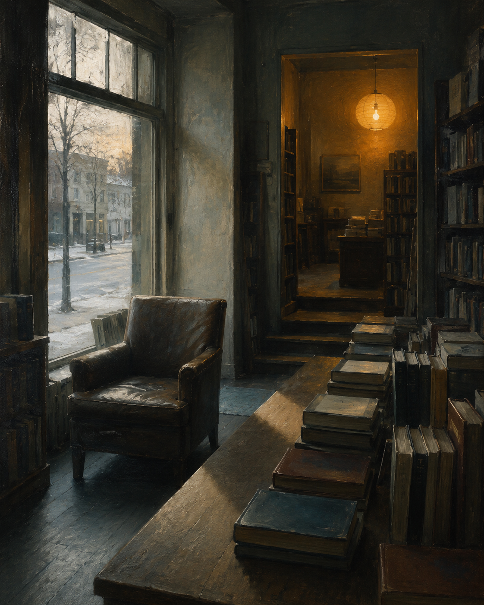
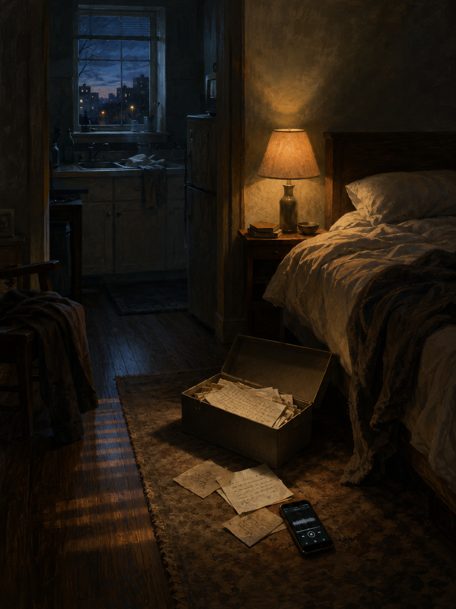
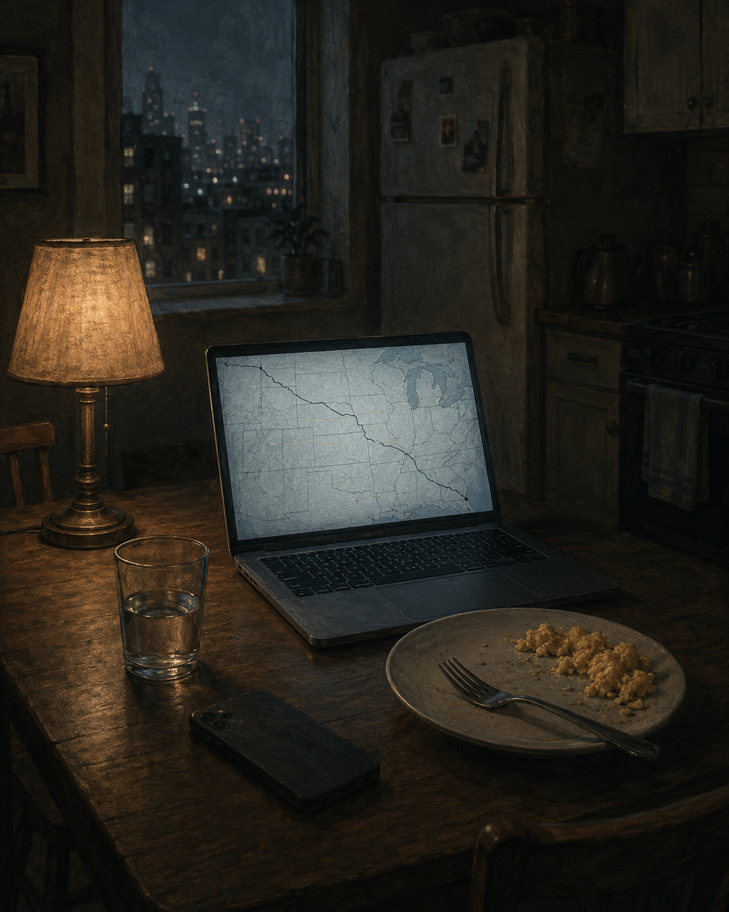
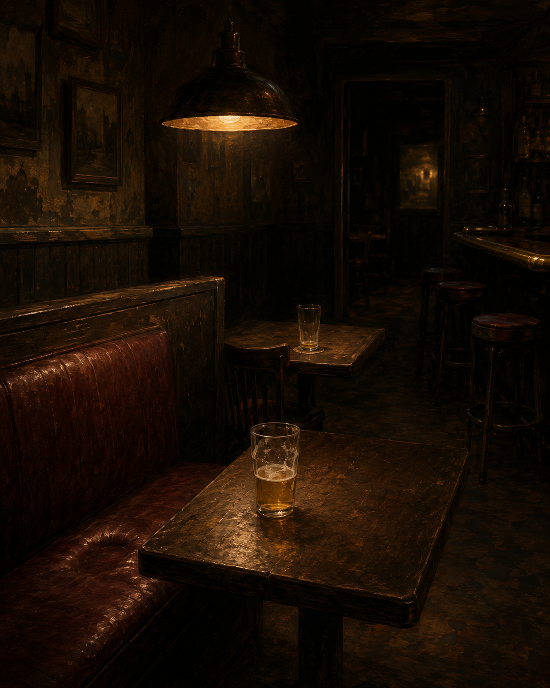

In BothHands
A quiet urban fantasy set in the Ohio River Valley in the autumn of 2025. A long-term-care insurance adjuster in Pittsburgh, a woman in Chicago who does not yet know what she is, and a friend whose death drew a line between them. The magic is small. The cost is not.
The chapters, as they come.
Working drafts. Posted here for friends as I write. Click a chapter to read it. Nothing here is final.
-
 Chapter One
Chapter OneThe Doherty Kitchen
The coffee was cold by Sharpsburg.
I had stopped pouring it before I noticed, and the cup sat in the holder full enough that a turn brought a little over the rim. I let it. I would clean the seat tonight.
Route 28 was empty in the way it was on Wednesdays. The sun came late over the ridge across the river, low and orange. I had driven the road for thirty years and never noticed driving it.
The file on the passenger seat was eight months thick. Michael Doherty, Tarentum. Pancreatic, stage IV at diagnosis. Accelerated benefits claim, filed two weeks ago, the policyholder's signature shaky but his. His mother had power of attorney. She was the one I would be sitting with.
I had read the file twice on Tuesday. I had read it once more before I left the house this morning. There were things in the file you read once. There were things in the file you read three times because reading it three times was a way of being ready for the kitchen.
I drove.
The Doherty house was on Lock Street, two blocks back from the river, a brick rowhouse in the middle of a brick row. The block had been the same block since 1922. The cars on the street were the cars of an aging block. I parked behind a Buick with a handicap tag on the mirror.
She came to the door before I had finished pressing the bell.
"Come in."
"Mrs. Doherty."
"Come in. He's resting. You won't see him."
"That's fine."
She was in her seventies, small, in a cardigan and trousers and slippers because slippers were what you wore in the house when you had not been farther than the house in a long time. Her hair was cut short and she had cut it herself. Her eyes were tired in the specific way the eyes of long-term caregivers are tired. The hall smelled of disinfectant and laundry detergent and, faintly, of something medical.
The dining room door was closed. I did not need to ask why.
The kitchen was in the back of the house. The table was a round oak table with four chairs. On it: a stack of mail, a manila folder, a binder, three pill bottles, an open envelope of forms, a coffee cup with a tea bag in it. The chairs were pushed in. The chairs had not been pushed out in a while. The fixture above the table had two bulbs in it and one of them was out. We sat in the half-light.
"I made tea," she said. "I can make coffee."
"Tea is fine."
"I have coffee."
"Tea is fine, ma'am."
She poured. She sat down across from me. She did not fold her hands. Her hands went to the binder and opened it.
She had the records ready. The oncologist's letter. The diagnosis. The latest imaging report. The prognosis letter, which the oncologist had written three weeks ago in the careful neutral language of a man writing for an insurance company on behalf of a patient who had been his patient for eight months. Life expectancy of less than six months. I read the letter. I read the imaging report. I read the diagnosis. I made notes.
My chest was heavy. It was the kind of heavy that came sometimes when I sat with paper. I had read a thousand letters like this. The weight did not get smaller across a career. It got the shape it had.
She watched me read.
"You'll send it in today."
"Yes ma'am."
"How long."
"Two weeks. Sometimes faster. I'll push it."
"Thank you."
I took out the forms. I had her sign three of them—the certification of identity, the acknowledgment of receipt, the disclosure of beneficiary. She had a POA on file. She signed for Michael on a fourth. She wrote her son's name in her own hand and signed her own name underneath it. Her handwriting was careful. The careful was a thing she was doing on purpose, because her handwriting had not been careful for weeks. The careful was costing her something. I watched her finish the signature and lift the pen.
"That's all of them."
"Good."
I did not close the pad. There was a moment in which I could have closed the pad and stood up and thanked her and gone. There always was. I had learned in the second year to pause inside that moment. The pause was a way of being in the room.
The room had been in the half-light the whole time. The bulb above us had been out the whole time. The wall clock ticked. From the closed door of the dining room there was nothing.
"Mrs. Doherty."
"Yes."
"Have you been sleeping."
She looked at me. She had been about to stand. She did not stand. She sat back down.
"No."
"Since when."
"June."
It was November. I knew it was November.
"Who comes to help."
"My daughter. Tuesdays and every other Saturday. His wife. Wednesdays in the afternoon when she's off, sometimes longer. Hospice nurse three times a week."
"And the nights."
"The nights are me."
I nodded. The pressure between my eyebrows had been there since I had read the prognosis letter and had not let up. It got a little heavier now. I had a way of breathing that I had developed for it and I used the way of breathing.
"Mrs. Doherty. Is anyone asking how you are."
She looked at me. She had been sitting upright in the careful way. Something in her shoulders moved. It was a very small movement. It was the movement of a woman who had been told for eight months that she was amazing and that she was so strong and that she was such a good mother, and who had needed in those eight months a different question, and who had not been asked the different question.
"No."
"How are you."
She held my eye for a moment. Then she looked down at her hands. Her hands were on the binder. She had small knobby fingers and the wedding ring she had worn for fifty-some years.
"I'm tired."
The pressure between my eyebrows sharpened the way it did when the light over the table was wrong.
She said it without looking up. She said it the way you say a thing you have not said and that you have been carrying because the not-saying was the carrying. She said it once. She did not say it again.
The weight in my chest changed shape. It moved from the front of my sternum to somewhere lower and broader, and it sat there. I put my hand against my own chest without thinking. I took it down again. I sat with her. I did not say that's normal and I did not say anyone would feel that way and I did not say any of the things people had been saying to her for eight months that had not helped her. I sat with her. The pressure in my brow was specific now. The weight in my chest had settled into the shape of something I had been carrying my whole adult life and that I did not have a name for.
After a while she breathed out. The breath was quiet. The breath had the smallness of a thing that had been ready to come for a long time and that was, finally, in a room that would let it.
"Thank you," she said.
"Yes ma'am."
She put her hands flat on the binder.
"Is there anything else."
"No ma'am. I have what I need."
"All right."
I closed the pad. I stood up. She walked me to the door. She stopped at the door with her hand on the latch.
"You're not going to write that down. What I said."
"No ma'am. I'm not."
"All right."
She opened the door. I went down the steps to the street. The Buick with the handicap tag was still there.
I sat in the car for a long time before I started it. My chest was heavy. The pressure across my brow had not gone away. I had thought about driving straight back to Pittsburgh and I sat with the thought and the thought did not hold. Somewhere around the second minute of sitting in the car I decided I would stop by my father on the way.
I started the car. I drove north.
It was a backtrack to take 28 the other direction from Tarentum, and I took it. The river was on my left now. The sun was overhead. I drove past the turnoff for the slope-street and did not take it. The radio was off and I did not turn it on.
The accent came back somewhere on the New Kensington bridge. When I stepped into the dayroom I heard it in my own mouth before I could stop it. "Hey, Pop. Yinz got the birds again today."
He turned his head. He looked at me for a moment that was longer than the moment of a man who immediately recognized his son and shorter than the moment of a man who didn't. He smiled. The smile was the smile he gave to people in the hall, the smile he gave to the aides, the smile of a polite man.
"Hello."
"It's me."
"I know it is."
He didn't. He was telling me he didn't.
I pulled the other chair around so I was sitting next to him, both of us looking at the courtyard. I had learned in the second year that side-by-side was easier than across-from. The across-from configuration asked his face to do a thing his face was not always able to do. Side-by-side asked only that we both watch the birds.
We watched the birds.
"There's a cardinal," he said after a while.
"I see him."
"He comes most days."
"Does he."
"Pop's wife liked cardinals."
He said it like that. Pop's wife. He was telling me about his mother. He was telling me what his father had said to him, sixty years ago, about the woman who had been Pop's wife and not yet my grandmother. I did not correct him. I had learned in the first year not to correct him. The story was the story he had today and the story was a story he had told me before, when he had told it as his own.
"She liked them too," I said. "Mom."
He looked at me. There was a moment in which he was looking at me and not at the past.
"Yes," he said. "She did."
He took my hand. His hand was light. The lightness of it was a thing that had happened across three years and that did not stop being a new thing each visit. I held his hand and we watched the birds and the cardinal came back to the feeder and the cardinal went away again.
The weight in my chest moved again. The pressure in my brow held steady. I sat with my father and I held his hand and I was, in a way I would not have been able to say, in the same room I had been in that morning. The room had different walls and a different chair and a different light. The work that was happening in it was somehow the same work.
We sat for a long time. I do not know how long. I had learned to stop checking my watch in the dayroom because the watch did not help. Time in the dayroom was the time the dayroom kept. He talked some and was quiet some. He told me a story about a man named Frank who had worked at the plant with him, which was a story I had heard, and he told me a story about Helen's garden, which was a story I had not heard. The garden story might or might not have been real. I would write it down later in the car. I had been writing down the stories that might or might not be real for two years now. Helen sometimes confirmed them and sometimes did not, and when she did not we both held the not-knowing with as much grace as we could.
When the aide came in with the cart I knew it was four o'clock.
"I'm gonna head, Pop."
"All right."
"I'll come up again in a few weeks."
"You don't have to."
"I want to."
He looked at me. He looked at me the way he had not looked at me when I came in. He nodded.
"Drive safe, son."
"I will."
I stood. I bent down and kissed the top of his head. His hair was thin. He did not say anything else. When I left the dayroom I did not look back, because I had learned in the first year not to look back, because the looking-back is for the person leaving and not for the person being left, and my father did not need to watch me look at him from the doorway.
The nurse said goodbye. I signed out. I went to the car.
I sat for a moment before I started it. I was tired in a way I had been tired before. The tiredness was a familiar weight. I had attributed it to the drive. Today I would do the same. I started the car and I drove home.
Pittsburgh in late afternoon in November is a city that gives up the light gradually. There was still some of it when I came down off the Highland Park bridge and there was less of it by the time I turned onto my own street and there was none of it by the time I had parked the car and walked up the steps to my own door.
Olive was at the door. She was at the door the way she was at the door—small, slow, the cat she had become this year. She had been a four-pound cat for two years now. She had once been an eight-pound cat. The vet had said the eight pounds would not come back and that the four would slowly become three and that we should think about quality. We had thought about quality. The thinking had become the way the year worked.
I picked her up. She had no resistance to being picked up. She had no resistance to most things now. She put her head against my shoulder and made the small sound she made and I carried her into the kitchen and put her on the counter.
I had a cup of coffee. I had it slowly. I changed her water and watched her drink. I gave her a small piece of chicken from the refrigerator, which she ate. I sat down on the floor next to the counter and she came to the edge of the counter and looked at me. I put my hands up and she walked into them. I held her against my chest and we sat on the kitchen floor for a while.
When I had finished the coffee I carried her out to the porch.
The porch faced the slope. The slope was in shadow already. The neighbor's kitchen across the street had a window lit. He was at the sink. I could see his shoulders moving. He had been washing dishes at six o'clock for as long as I had lived on the street.
The cat was in my lap. The mug was in my hand. The shadow was around me. The neighbor's window was the only lit window I could see and it was lit the way I liked windows lit—small, warm, far enough away that it was a window in a painting.
I had never really understood why most people fear the shadow.
I had thought, when I was a child, that I would grow out of it—the thinking that the shadow was a good place. I had not grown out of it. I had grown further into it. I had built my house around it.
The shadow is where lovers meet. The shadow is where children sleep without knowing they are safe and where families sleep without knowing they are sleeping. The shadow is the back booth and the porch and the lamp turned down and the corner of the room where no one is looking. The shadow is what a house does to itself in the evening when no one has come home yet. The shadow is the kitchen at eleven on a Tuesday with the lights off and one window across the way still lit.
The light is where the paperwork happens. The light is the prognosis letter and the bulb above the table and the form to be signed. The light is the dayroom at four o'clock when the cart comes in. The light is the chair in which Robert Kowalski had been sleeping for two months because the bed hurt his back, and the doctor's appointment he did not make. The light is the hospital corridor and the daughter sitting too straight in the chair next to the bed. The light is the bar at last call when a fight breaks. The light is every place a thing has to be witnessed.
Witness is sometimes the cost of being in the light. The shadow does not ask for witness. The shadow lets you be the small thing you actually are and goes on being the shadow.
The cat shifted in my lap. She was breathing the small breath she breathed now. I put my hand on her side. The mug was still warm. The neighbor's window went out at seven, the way it did. I sat in the shadow.
Shadows equal safety to me.
-
 Chapter Two
Chapter TwoBeth Reilly's Call
Friday came in cold and was over by six.
I had worked from home. The Doherty file had gone in Wednesday night and the acknowledgment had come back Thursday afternoon and the rest of the week had been three smaller files and a back-and-forth with the office about a denial they wanted me to soften the language on. I had softened it. I had sent the final at four-twenty, closed the laptop, and stood in the kitchen for a while looking at the calendar on the refrigerator door without reading it.
Olive was on the counter. She did not have the energy to ask for chicken anymore; she sat near the refrigerator door and waited for me to remember. I remembered. I gave her a small piece from the dish in the second drawer. She ate half of it and lay down on the dish towel I had folded for her in her corner the year she had started not wanting to be on the floor.
I put the kettle on. I had not had a mug since the morning.
The phone rang.
It was the cordless on the counter. I kept the landline because Helen called it on Sunday afternoons and because two or three of the older clients still preferred it. The display showed a Minnesota area code. I did not know anyone in Minnesota.
"Hello."
"Is this Eugene Butler."
"Yes."
"My name is Beth Reilly. I'm calling from St. Louis Park." She stopped. She started again. "I was a friend of Maggie's. Margaret Hennessy."
I knew before she said the rest.
"Yes."
"She passed on the twenty-eighth of October. I'm sorry. I should have — I've been trying to reach you. I had two old numbers in her book."
"Yes."
"The funeral was the Tuesday after. I would have called sooner. I didn't have a good number."
I sat down at the kitchen table with the cordless in my hand. The kettle clicked off behind me. I let it.
"It's all right," I said. "Thank you for calling."
She did not say anything for a moment.
"I didn't know if you would remember her."
"I remember her."
"I thought you would."
The pressure across my brow was settling. The weight in my chest had not yet moved. The conversation was happening at the speed of these conversations. I had been on the other end of these conversations many times across the years. I had not, in thirty years of work, been on this end of one.
"Can I ask."
"Yes."
"What happened."
"Cancer. She'd been sick since the spring. She didn't tell most of us until September. They thought they had time, and then it went fast."
"At home?"
"At home. Yes. A cousin was there. A nurse she'd worked with. And a friend who'd been helping her."
"I'm glad."
"I know she would have called you if she could have. She — she talked about you. Not often. But she did."
The weight in my chest moved. My hand went to my sternum without my asking it to and I left it there a moment and took it down again.
"Where," I said.
"What — I'm sorry?"
"Where was the service. I'm sorry. Where was — "
"Oh. St. Michael's in Wheeling. It was just family and close people. There weren't a lot of us. She didn't want a big thing."
"All right."
"I have an address if you want it. For the cemetery."
"Yes."
She gave me the address. Mount Calvary, on Mount Calvary Road in Wheeling. I wrote it on the back of an envelope from the stack on the table. I had reached for the envelope without looking. The envelope was the one the gas company sent. I would remember later that the address went on the back of the gas bill, in my own handwriting that I had not looked at while I wrote.
"Mrs. Reilly," I said.
"Beth."
"Beth. Thank you."
"You're welcome." She sounded like she was about to say something else. I had heard that pause many times. I had been the one making it many times. I waited.
"I'm sorry," she said. "I don't know why I'm finding this one so hard. I've been making these calls for a week."
"It's all right."
"Yours was a name I had to look up. Most of them I knew. Yours I had to try three times. And then you answered and — I'm sorry. I'm tired."
"Beth."
"Yes."
"You're doing a hard thing. You don't have to be sorry."
She breathed out. It was a small breath. It was the breath of a tired woman in a Minnesota kitchen on a Friday evening, talking to a stranger she had reached on her third try, and the breath had the smallness of a thing that had been ready to come for a while.
"All right," she said. "Thank you."
"Yes."
"If you go down. If you have any questions about — anything. The number I called from is mine."
"All right."
"All right."
We hung up. I sat with the phone on the table for a long time.
After a while I stood up. The kettle was still warm but not warm enough. I put it back on and waited for it. When it had come up again I poured the water into the press over the grounds I had ground before any of this had happened, and I pushed the lid down loose and waited, and when it was done I poured a mug and held it.
The mug was hot in both hands.
I had been twenty-six. April of 1995. The Foodland on Hancock Avenue, on a Saturday afternoon, after I had stopped on the way to Helen's to pick up the thing she had asked me to pick up. The friend had been on the cereal aisle. She had been thirty-six. She had said Gene and I had said her name and we had talked for five minutes. About my father. About her hospital. About the weather in Wheeling, which was the weather in Pittsburgh an hour delayed. She had said we should get coffee. I had said yes, definitely, I'd like that. We had both meant it. There had been a sale sign for Quaker Oats behind her and a fluorescent overhead with two bulbs slightly out of phase. I had registered both. I had gone back to Pittsburgh on Sunday. She had gone back to Wheeling on Sunday. Coffee could be the next month, or the one after, and then it could not be, because I had been at a new job and she had been on shift and there was no hurry for any of it.
I had been standing in the cereal aisle inside my head for thirty years.
I set it down.
I drank what was in the mug. I drank it slowly. Olive was no longer in the kitchen; she had gone to the bedroom, the way she sometimes did in the evening when the kitchen was done with her. I walked down the hall. She was on the throw at the foot of the bed, breathing the small breath. I sat on the edge of the mattress and put my hand on her side. She was warm. She did not open her eyes.
I sat there for a while. I did not turn on the lamp.
After a while I went back to the kitchen. The envelope with the address was on the table. Mount Calvary Cemetery, Wheeling, West Virginia. The writing was steady.
I picked up the cordless and held it and put it back in the cradle. I did not call Helen. Helen called me Sundays; this was not a thing to put into her Friday. I would tell her on Sunday. I would tell her in the slow way of telling her. I would not tell my father. There was no version of telling my father that landed anywhere.
I rinsed the mug at the sink and left it on the rack. I stood at the sink a moment. The neighbor's window across the street was lit. He was at his sink. He was washing dishes. He had been washing dishes at six o'clock for twenty-three years and he was washing dishes at six o'clock tonight. He raised his hand without looking up. I raised mine. He had not looked up; I did not know if he had felt me look at him, or if it was the hour he raised his hand and he raised it whether or not anyone was at the window across the way.
I thought about the drive.
I had Saturday morning open. I had no files until Monday. Wheeling was four hours on 70 if the traffic held and four and a half if it didn't. I could be there by noon. I could stand at the grave for whatever amount of time was the amount of time for standing at a grave thirty years late, and I could be back by dark.
I would go in the morning.
I stood at the sink a while longer. The neighbor's hands moved at his sink and the dishes went up onto the rack one at a time. The bulb above him was the bulb. The kitchen behind him had the lamp on in the corner that he kept on in the evenings. The room was lit and the room had been lit, the way a window in a painting is lit, for twenty-three years.
I turned my own lamp off and went down the hall and got into bed beside Olive without taking my clothes off, because the clothes were warm enough and Olive was already settled and I did not want to move her, and I lay there in the dark, and after a while I slept.
-
 Chapter Three
Chapter ThreeFour Saturdays
I had planned to leave at seven. The phone rang at six-fifteen.
The number was the office line. I let it ring. I had a cup of coffee in my hand and I had not had a cup of coffee while standing in the kitchen for a Saturday morning in a long time. I let it ring again. The second ring was almost over when I picked up.
The daughter on the other end was a woman I had spoken to once on a Wednesday in October. Her mother was a long-term-care policyholder of mine, Theresa Stanek, Latrobe. Stage IV ovarian cancer at diagnosis, accelerated benefits filed in late August, the file three months in and substantially clean. The mother had been in respite care since the second week of October. The daughter was calling because her mother was now at Excela Westmoreland and the hospital was telling her the policy did not cover the level of care they wanted to move her to, which I knew was a thing the hospital was telling her wrongly. She was crying through it. I told her I would look at the file and call her back in an hour.
I sat down at the kitchen table with the coffee in front of me and Olive at the corner of the counter and the trip bag by the door with my coat folded on top of it. I opened the laptop. The file came up. The daughter's call was not the first call about Theresa Stanek's level of care. There was a Friday note from the hospital in the inbox that I had not seen because the note had not arrived until late Friday and I had been on the porch by then and not looking at email.
I read the note. I drafted the response. I read the note again. The hospital was wrong, but it was wrong in the particular way that needed a phone call to fix and not an email. I called the discharge office. I waited for the discharge office to call me back. I made a second pot of coffee. The bag at the door stayed by the door.
The hospital called me back at nine. The conversation took twenty minutes. I called the daughter at nine-thirty. She thanked me twice. She had stopped crying. I sent her the form she needed to forward. I sent the hospital the form they needed to file. I closed the laptop.
It was ten-fifteen.
The bag was still by the door. The coat was still folded. I could have left at ten-fifteen and been in Wheeling by noon. I sat at the table for a few minutes and thought about it. The pressure across my brow had come on at six-thirty and not let up.
I picked up the phone and called Beth.
She answered on the third ring. I told her I had been delayed. I asked if next Saturday was all right. She said next Saturday was all right. She said she would tell Eileen. She said thank you for calling. Her voice had the same flatness it had had the previous Friday. The flatness was a thing I was getting to know about her voice.
I hung up. I made eggs. I ate them at the kitchen table with Olive on my lap. The bag stayed by the door.
I read the rest of the morning.
The second Saturday was the one Helen fell.
I knew it had happened before I saw the caller ID, in the way you know when the phone has the shape of bad news inside it. I had been making coffee. The number on the screen was Lower Burrell, the landline, not Helen's. It was the neighbor.
"Gene. It's Pat from next door. Helen had a fall."
"Where is she."
"Citizens. They took her in about an hour ago. She's all right. Her wrist is bad. They've been waiting for X-ray. I'm with her now."
"How bad."
"She didn't break the hip. The wrist is broken. They might pin it. They're not sure yet."
"How did she fall."
"She slipped. I don't know. She was at the counter. She doesn't remember the moment. She remembers being on the floor."
"I'm coming. Tell her I'm coming."
"All right."
I hung up. I put the coffee into a travel mug. I picked up the bag that had been by the door for eight days. I had not unpacked it. I left it where it had been packed for and threw a second smaller bag of clothes for Lower Burrell over my shoulder. I locked the door. Olive watched me go from the chair by the window.
The drive to Lower Burrell was familiar. I had driven it for forty years. I drove it without thinking. The sun was overhead by the time I got past Tarentum, and I thought about the Doherty kitchen as I passed the exit and did not take the exit. There was a place in the road, three miles past Tarentum, where the river opened out on the left and you could see the shape of the valley as a valley, and I noticed the valley and did not say anything to myself about noticing it. I had been driving past the place since I was sixteen.
Citizens General was a small hospital on a hill above the New Kensington bridge. I parked. I went in.
Helen was in a curtained bay in the ER, sitting up, her left arm in a black sling. Her hair was flat on one side and her mouth was set. Pat was in the plastic chair next to the bed and stood up when I came in.
"There he is."
"Pat. Thank you."
"I was just leaving. You're all right now."
"I'm all right."
She left. I sat in the chair she had vacated. Helen looked at me.
"You didn't have to come."
"Hush."
"I really am all right."
"I know."
She held her right hand out and I took it. Her hand was cold. The hospital was cold in the way hospitals are cold. The light over the bed was the kind of light Helen would not have chosen for a kitchen. I sat with her.
The doctor came in at three-thirty. The wrist was a distal radius, displaced. They were going to set it and pin it; the orthopedic surgeon would do it at four. She would stay overnight. I could pick her up Sunday morning if the discharge cleared. I said I would. The doctor went out. The curtain swung and settled.
"You'll go home," Helen said. "I'll be fine here. I'm fine."
"I'll go to the house. I'll get a few things for you. I'll come back."
"You don't have to."
"I want to."
"Gene."
"Yes."
"Edward will worry."
She did not say don't tell him. She said Edward will worry. I knew what she meant. I would not tell him this weekend. I would tell her son in Phoenix tonight by text. I would tell my father next time I drove up, if he was clear enough that the day for the information to land in a way that would not just bewilder him.
"All right."
She closed her eyes. The hand stayed in mine. The hand was the part of her she did not have to consciously hold up. The wrist was the part of her that had stopped working. The other parts of her had not changed but had aged eight years in the last hour, which was a thing I had watched happen to people for thirty years and had not gotten used to.
The surgeon came at four. They wheeled Helen out. I went down to the cafeteria. I ate a thing that was a sandwich. I drank coffee that was burned. I sat at a small table by the window. The window faced the back of the parking lot and the field behind the hospital and the gray sky behind the field. The wall clock was twenty minutes fast. I knew this because I had eaten in this cafeteria when my father went in for his gallbladder in 2019 and the clock had been twenty minutes fast then.
When she came up to her room I sat with her again. They had put her in a room with no one else in the second bed. The IV was on her right arm. The cast was on the left. She was groggy. She knew I was there. She slept.
I went to the house at eight. I let myself in with the key I had carried in my wallet for twenty-six years. The house was the same house and it was also the house of a woman who had been at it that morning and had not finished. The cup with the tea bag was on the counter. The mail was on the kitchen table. The radio was off but the kitchen had the kind of quiet a house has when a person has not been in it for a few hours and the person was the radio. I put a few things in a bag for her. The bag was not heavy. I sat at the kitchen table for ten minutes and did not turn the light on.
I drove back to the hospital. I sat in the chair next to the bed.
She woke around ten. She looked at me. The look had the long-married look in it.
"You should have gone home."
"I'm staying."
"Gene."
"I'm staying."
She was quiet for a while. The window was dark. The hall outside the room had the low light of a hall at night with the carts pushed against the wall. A nurse came in to check the IV. She left.
Helen said, "Tell me what's going on with you."
It was the question she did not usually ask. She asked about my work and about Olive and about my father; she did not often ask the open question. The open question was what she was asking because she had time and the room was the room and her wrist was in a cast and the morning had aged her.
I sat with the question for a moment.
"Maggie Hennessy died."
She was quiet.
"From Vandergrift."
"I know who Maggie was."
"Yes."
"When."
"Three weeks ago. Beth called me last Friday. The funeral was already past."
She closed her eyes. She did not open them when she spoke.
"I'm sorry, Gene."
"Yes."
"I haven't seen her since your wedding."
"That sounds right."
"She came to the wedding."
"She did."
"Edward liked her."
"Yes."
"She wrote a letter to your mother once."
I did not know what to say to that. I had not known. I had a moment in which I thought I might ask and I sat with the moment and the moment passed.
"Did you know she was sick," Helen said.
"No. Beth said cancer. She had told Beth in September."
"Oh, Gene."
"It's all right."
"You haven't said it's all right."
"I haven't been saying anything."
"All right."
She opened her eyes and looked at me.
"You go down there."
"I will."
"You go down there and you do whatever you need to do."
"Yes."
"You hear me."
"I hear you."
She closed her eyes again. The hand in mine had gotten warmer at some point in the hour. The pressure in my brow had not changed. The chest was the chest. I sat in the chair and Helen slept and the room was the room and the hospital was the hospital and the night went on as nights go on.
The third Saturday was Joe Demko.
I had not seen Joe Demko in eight years. He had been an adjuster at the firm I worked at before this one, the firm I left in 2006, and he had stayed there and retired from it in 2017, and I had gone to his retirement lunch at Atria's in Mt. Lebanon and we had said we should get together in the way men of our age and profession say we should get together and I had thought of him perhaps twice in the seven years since. He died on a Wednesday. The obituary was in the Trib on Friday afternoon. Visitation Saturday morning at the funeral home on Library Road in Bethel Park.
I read the obituary at four on Friday. I sat in the kitchen with the laptop closed and the obituary up on my phone. The obituary said Joseph A. Demko, 79. It said peacefully at home with family present. It said his wife's name and his children's names and their towns. It said in lieu of flowers. I read the obituary twice.
I called Beth.
She answered. I told her something had come up and I would come the following weekend. She said the following weekend was fine. She said she had been meaning to tell me Eileen was no better. She said Eileen's husband had come down from Erie. She said take care of yourself, Gene. She did not say you said last week. I noticed the not-saying.
Saturday I drove to Bethel Park. The funeral home was the funeral home on Library Road. I had been there twice before, both times for clients. I had not been there for someone I had once gotten coffee with at six in the morning.
The room had a slow line and the line moved. I waited in it for fifteen minutes. Joe's wife was a woman named Donna whom I had met once at the retirement lunch and who recognized me from the eyes the way people do when their memory for faces is shorter than their memory for the shape of someone's eyes. She held my hand for a moment longer than she had held the hand of the man in front of me. I said the things you say. She said thank you for coming. She said he liked you, you know. I said I had not known. She said he wouldn't have said. She said something else, and I do not remember what she said.
I went out to the car. I sat in the car in the parking lot for ten minutes. The brow pressure was the brow pressure. The chest was the chest.
I drove home. The Subaru pulled slightly to the right somewhere on the Liberty Tunnel approach in a way it had not pulled the week before, and I made a note to take it in.
I made it home by two. I could have left for Wheeling at two and arrived by four. I knew this. I sat on the porch with Olive for a while and the afternoon went and the porch was the porch and I did not go.
The fourth Saturday I left at six.
It was still dark. The bag had been by the door for twenty-eight days. I had unpacked and repacked it once, in the middle of the third week, after I had realized I had packed for the wrong weather. I had added a pair of gloves. I had taken out the lighter shirt. The bag was, by this Saturday, a bag that had been thought about.
The Subaru had been to the mechanic on the Monday after Joe Demko. They had said it was the alignment. They had aligned it. The pull was gone. Olive was on the chair by the window when I left. I had fed her at five-thirty. I went down the slope and through Bloomfield and onto the parkway and the Subaru drove straight.
The parkway was empty at six. The sky was the sky of a November Saturday before sunrise, the kind of sky that has no weather in it yet and is waiting to decide. I had the coffee in the cup-holder and the news on low and the bag on the passenger seat where the Doherty file had been on the morning that was now in another month.
I-79 came out of the parkway and ran south toward Washington and West Virginia. I had driven this stretch maybe a dozen times in thirty years, for clients in the southern valleys. The road was familiar without being known. I drove. The light came up around Bridgeville. I passed Canonsburg. I passed Washington. The exit for I-70 west came up at the south end of Washington and I went past it.
I went past it.
I was three miles south of the exit when I noticed. The thing I noticed was a sign for Waynesburg. Waynesburg was south of where I was supposed to be. I checked the map on the phone. The phone reset the route. The map said go on to the next exit and turn around.
I drove to the next exit. The next exit was eleven miles further south than I-70 would have been. I got off. I got back on. I drove the eleven miles back north. I took I-70 west. The whole detour had cost me thirty-five minutes. I did not think about the thirty-five minutes. I drove.
I-70 west of Washington was a road I had not driven in twenty years. The shoulders had been widened and the medians had been paved and the trees had grown. There was a single lane closed for construction somewhere around the West Alexander exit. The single closed lane went on for nine miles. The traffic was a trail of trucks and weekend cars and one black hearse, three vehicles ahead of me, that pulled off at the West Alexander exit and was gone. I did not know if it had been on the way to a funeral or coming back from one. I followed the truck in front of me. The truck did fifty-two miles an hour. I followed the truck for nine miles.
I crossed into West Virginia somewhere I did not see the sign for. The road came off the high ground and started down toward the river. I had not been in West Virginia in thirty years. The trees were the trees of West Virginia and not the trees of Pennsylvania, which was a thing I had not known until I had not been in West Virginia for thirty years and was now back in it. The land was steeper. The houses on the hillsides were closer to the road.
I needed gas. The needle had been at a quarter when I left and had been at less than a quarter at Washington and was now at the line. I took the first exit with a station sign and pulled into a station with three pumps and a small lit building behind them.
The pump did not work.
I tried to put my card in. The reader said please see attendant. I tried again. The reader said please see attendant. I went inside. The attendant was a young man with a phone in his hand and a name tag that said TAYLOR. Taylor looked up.
"Pump's down. Has been since yesterday. Sorry."
"All three?"
"The three out front. The other side's open. Two and four."
I had not seen the other side. I went back out. I drove around. The other side had two pumps and one of them was the pump that worked. The pump that worked had a woman at it filling up a Cherokee. I waited. She finished. She drove off. I pulled forward. I filled the tank. I bought a coffee inside that I did not need. Taylor took my card. Taylor said have a good one.
I had spent twenty-two minutes at the station.
I got back on the interstate. I drove down toward the river. The exits for Wheeling came up. I took the exit for downtown.
Wheeling came at me through the windshield the way a city does when you have not seen it in thirty years and were not certain in the moment of leaving it that you would ever see it again. The bridge over the river. The brick streets. The hill at the back of the city where I knew the cemetery was. The buildings I knew without knowing I knew them — the Capitol Theatre, the cathedral, the old hotel near the bridge. The city was the city it had been. The city had also done the things cities do across thirty years, which is to lose some buildings and gain others and let some blocks go and pull some blocks back.
I had not booked a motel. I had thought I would drive in and find one. I had thought wrong, or I had thought correctly and had simply not done the thinking past the first move. I drove down a main street and then a parallel street and then a numbered street, and somewhere on the numbered street I saw a sign for a motel on a side road, and I turned onto the side road, and I parked in front of the motel.
The motel was a one-story brick L of twelve rooms set behind a small office at the corner of the lot. The sign said COLONIAL MOTOR INN in blue letters, two of which were unlit. The office had a vending machine outside it and a chair on the sidewalk next to the vending machine that no one was sitting in. The lot was half full. The lot was the lot of a motel that worked.
I did not get out of the car.
I sat with the engine off and the bag on the passenger seat and the empty coffee in the holder and the brow pressure that had been there since six. I had driven from Pittsburgh to Wheeling, ninety minutes the long way, in five hours. I had crossed a state line for the first time in thirty years to a city I had not chosen to come to until I had been told I had to. The motel was not the motel I would have chosen. I had not chosen the motel. The motel had been the motel I had turned onto the side road for.
I sat in the car.
After a while I got out.
-
 Chapter Four
Chapter FourAvondale to the Loop and Back
I have sunglasses on at eight-fifteen on a November Tuesday under a sky the color of a not-quite-clean window, and the woman on the bench at the California stop is looking at me like I am committing an offense against the dignity of weather, which is fair, but she has not had the year my eyes have.
I take my seat at the end of the second car. Aiden was not at the bakery this morning — Aiden is the boy with the curls who keeps forgetting to charge me for things and is currently the closest thing I have to a meaningful relationship with another human being in this city — and so I had to buy my long-with-the-seeds from a woman I did not know, who charged me, which felt like a small bureaucratic injustice but which I bore.
Two women in the row in front are arguing about whether one of them should get back together with someone named David. The one in the camel coat says David has finally listened. The one in the green hat says David's listening is a thing that has a half-life. The one in the camel coat thinks about this for a minute and says, "Yeah, but the half-life is still long enough to enjoy."
The train goes under at Western and the bars drop. My mother has not called. She is further down the recents list than she has ever been — below Maddie, below the dentist, below a number I do not recognize — and she used to live at the top, and I have been letting the slippage be nothing. She is busy. She is grieving; she lost her closest friend last month, and I have done the right things from a distance and not once managed to be in the same quiet with her. The quiet has started to feel like a setting and not like my mother. Ok, I think; I will call her now, before the office, before I can decide not to. I get her name up under my thumb and the screen holds on the spinning circle the way it holds down here in the dark, and I wait, and then I am not waiting — the phone is face-down on my knee and I did not decide to put it there and the call is not made. The text from Maddie is still on my lock screen from yesterday: do u think a person can love their job and also fully not care if it gets hit by an asteroid. I will answer at lunch. I will say yes.
The Blue Line at Clark and Lake is a fluorescent room with people in it pretending they are not in the same fluorescent room together, and I cross the platform and go up the stairs because I like the stairs and I do not like the escalator on Tuesdays. My building has the revolving door I have an opinion about — the door turns a half-beat ahead of you, which is either generous or condescending depending on your mood, and Tuesday is a generous-door day. Twenty-four has the gray carpet and the gray walls and the windows that face north. North light is my favorite light to work in, and I would not have known I had a favorite until I worked here. I plug in the laptop. I get the okay coffee from the third pot. The first three emails are from Houston, and I love Houston, but Houston needs to send fewer emails in the morning.
The nine-thirty is six of us in the small conference room and a screen at the head of the table with a routing diagram I made yesterday. My boss is Cara. Cara came up through operations and crossed into something that does not have a clean name on the org chart, and Cara wears the same chunky glasses she has worn for twelve years because she said in a town hall once that the glasses were the only fight she was willing to have with herself before nine a.m.
The room knows what the meeting is about before anyone says it. Sales wants IT to do something IT does not want to do. My job is to put the map up at the moment in the conversation where the map will do the most work.
The moment comes at minute eleven. I put the map up. The sales guy — Brendan, who is fine — leans forward. The IT guy — Doug, who is also fine — frowns at the screen and then frowns less. I do not say anything for almost a minute. Then I say the thing that lets Doug arrive at the conclusion he is already most of the way to: the routing change is going to be a pain, but not the pain he was bracing for. Doug nods. Brendan nods. Cara does not look at me but she does the small thing she does with her shoulders that I have learned means good.
In the hallway after, Cara says: "Tuesdays."
I say: "Tuesdays."
She walks the other way.
The kitchen has the bad coffee and the worse coffee and the okay coffee, and Aaron comes in while I am topping up from the okay coffee, and the law of office kitchens is that we have three seconds to acknowledge each other or it becomes a thing, and we hit each other at the second-and-a-halfth second — the upper bound of acceptable. He gets the worse coffee. We dated for a while when I first moved here, when I was new and lonely in the way I have now been new and lonely in seven cities, and then it ended — easily, no scene, the way a tide goes out — and I cannot now remember how it ended, or why, or which of us said the thing that ended it, only that it did and that it cost me nothing. He is seeing someone two teams over now. I am glad for him, or I am nothing; I cannot find the feeling that would tell me which. He nods on his way out. I am holding the mug a half-second longer than the moment is asking me to. I move my hand.
At my desk I answer Maddie. I send back a picture of a stapler with the message the office has a stapler week. She sends the laughing-crying. I am, again, the kind of person who has a job with staplers in it, but I have Maddie, so this is fine.
Lunch is the salad from the place on the corner where the woman behind the counter assembles things faster than I think is theoretically possible. I eat it at my desk while reading something on my phone that I will not remember reading. The afternoon is one call and a back-and-forth on Slack with the Houston manager about an invoice she has the wrong version of and that I send her in a way that lets her tell her boss she found it herself. At four I take the headache pills — two-p.m.-pills-plus-two-hours, my system for not letting the day slide sideways at its end. At five-oh-three I close the laptop.
Priya is in the elevator and I have not seen Priya since the all-hands, and we do the standard — how are you / fine / Tuesday / yeah — except Priya says I keep meaning to ask if you ever found that café on Clybourn and I say yes I did and she says was it the one and I say yeah, the one with the chairs that look like your grandmother's chairs and she laughs, and Priya has the kind of laugh that is louder than Priya is, and I have liked Priya since the first time I heard her laugh in a meeting in March. The doors open at the lobby and we say have a good night and both of us mean it.
The Brown Line going back is quieter than the Blue Line coming in — one of the small geographic injustices I have made peace with. I stand because there is a woman with a bag on the next seat who needs the seat for her bag and I do not feel like having that conversation. At California the wind off the river is a different wind at six-twenty than it was at eight-fifteen, and I like the six-twenty wind more. The neon at the laundromat is missing the same three letters it was missing in September. Through the window the woman at the folding table is folding, as she has been every Tuesday for the fourteen months I have been walking past this laundromat. I have come to feel that she is part of the structure of California Avenue and that if she stopped folding the avenue would notice.
I stop at the kebab place because I do not want to make dinner. Yusuf sees me come in and turns to the kitchen and calls back something in Turkish, and I have ordered the same thing for fourteen months in a row and the calling-back is the only part of the order I am responsible for: the kind of relationship I am happy to be in. I sit at the small table by the window. Yusuf brings me extra of the white sauce because Yusuf is the kind of man who notices that you finished the white sauce last time. I eat the food. I leave the right amount of money on the table. He says take care. I say you too.
The walk from the kebab place to my building is three blocks. The lamp by my front door has been replaced since last week, which means somebody has replaced it, which means I live in the kind of building in the kind of neighborhood where lamps get replaced. This is the kind of thing I noticed in Boulder and that I am still noticing here. Chicago is still the city after Boulder. It will be the city after Boulder until I decide it isn't.
In the apartment I put the keys in the bowl. I take off the coat. I go past the corkboard by the door — postcards, a card with a sailboat on it, a receipt for a doctor's appointment I forgot I had — and turn on the overhead, and three minutes later the lamp on the timer comes on, the small daily argument the lamp and I are having about which of us is in charge of light in this room.
The radio in the kitchen is at the news because I forgot to turn it off this morning. At some point between the second and third sentence of a story about a vote in committee the signal goes between things, and the room is briefly the not-quite-static the radio makes. I reach across the counter and nudge the dial. The news comes back.
I put the kettle on. I do not make tea.
I sit on the couch with my socks on. I take a picture of my own feet on the coffee table and send it to Maddie with no caption. Maddie sends back the heart. I close the phone. The radio in the next room is now telling a story about a road being closed for something, and that is fine. The apartment has a Tuesday-night quiet. I sit in it.
-

Chapter FiveTwo Stops Past
Saturday morning in Avondale is the radio low in the kitchen and the kettle and the bag of okay coffee I have been working on for three weeks, and I sit at the small table by the window with the New Yorker piece I started in October — three columns and a peace with not finishing, the way I do not finish New Yorker pieces.
Priya's text arrives at 12:40. Sooo sorry, Olivia's daycare called, gotta grab her, do u hate me forever. The text was sent at 11:58. I see the wrongness of that the way I see the laundromat's missing letters, and let go of it, because by twelve-forty I am on the Blue Line at California with my hand on the rail and my coat unbuttoned, and the rail and the coat are doing a math of their own that does not include the time-stamp on a text.
The coffee was at one in Wicker Park, a place Priya picked, with the chairs Priya described twice as the actual problem with the whole place in a way that meant she liked them. I am dressed. I am on the train. I will get off somewhere and get coffee and have a Saturday. I send back the dragon emoji and the heart, the dialect Priya and I have not established yet, though I am hoping it becomes our dialect, and I close the phone and look out the window at the dark, because the train has gone under at Western.
I get off at Chicago.
Damen had been the plan. I had said it to myself on the platform at California — Damen, Damen, the third one — and I had the platform muscle ready to step off, but the train pulled in and the doors opened and I was reading the poster on the inside of the car about ovarian cancer screening and I missed the step, and then Division was the next chance, and I was thinking about my own mother and what the screening schedule was for women her age and whether she had told me what the schedule was, and Division came and went, and at Chicago I stepped off, and the train pulled away, and I stood on the platform and registered the math of being two stops past where I meant to be, which was a math I had not done on purpose but was not unhappy about doing.
Up the stairs into the cold thin Saturday-afternoon sun. Chicago Avenue at Milwaukee is wider than the city has been for me in fourteen months, and I stand at the corner for a moment to let the size of the intersection do what it is going to do to my eyes, and then I turn left, because the wind is coming from the right and a person walks into the wind on a Saturday only if the person has a particular kind of constitution. Mine is not it.
I have been in this part of the city twice. Once for a wedding on Augusta two summers ago, someone Maddie knew tangentially, where I was Maddie's plus-one without Maddie there — she had bailed at the last second and I had gone anyway because I had the dress. Once for a doctor my insurance directory sent me to about the headaches, in a building I do not now remember. The neighborhood and I have a relationship of two-degrees-of-vague-recall, one degree more than nothing and one degree less than I-have-been-here.
I walk.
There is the smell of a bakery I do not pass, somewhere off the street I am on. There is a poster pasted onto the side of a closed bar — a band I have not heard of, a date in March, the photograph black-and-white. There is a third thing I do not see, and I turn down a side street I had not meant to turn down. A man across the street at the corner of Augusta and the next street is looking at me for the time it takes a person to register a stranger, and then he looks at me for a second longer than that. I move my eyes and keep walking and he does the same and I do not think about him again.
The bookstore is on the side street I have turned onto, in a building I would have walked past if the door had been closed. The door is propped with a brick. There is a hand-lettered sign that says OPEN and a chalkboard with the day's hours, the h of hours lower than the o. I go in.
The shop is one room and a back room. The front room has the reading chair by the window and the new books on a long table and the cash desk in the far corner with a man in his sixties behind it reading something thick. The back room has the used books on shelves and the floor of the back room is two steps down from the floor of the front room, which I do not see until I have nearly stepped down and caught myself. The light in the front room is the cold Saturday light off the front window. The light in the back room is one bare bulb in a paper shade.
Bea is in the reading chair.
She is in the chair the way she used to be in the chair in the cartography lab at Madison — her legs folded under her, her shoulders against the back, a book open on her lap she is not looking at. She has cut her hair since Madison. She is looking out the window. She does not see me come in.
I stand for a long time before I do anything. The man at the desk does not look up. The street outside makes its own small noises. A woman with a dog passes and the dog noses the brick that holds the door.
"Bea," I say.
She looks up. She does the thing a person does when their face has to catch up with a fact their face was not expecting. She says my name. She says Hannah, and the name comes out of her unrusted, like it has not been sitting in a drawer for eight years. She gets up out of the chair and we hug, and she is thinner than she was in Madison, and I notice this without saying anything about it, and we hold on for a beat longer than two people who knew each other in cartography class generally hold on.
"I cannot believe this," she says.
"I cannot either."
"I live four blocks from here."
"I live in Avondale."
"I have been here for fourteen months."
"I have been here for fourteen months."
We stand and stare at each other.
"Sit down," she says.
I sit. She moves a stack of books off the other chair — there is another chair, against the wall by the radiator, that I had not seen — and pulls it across to the window, and we sit by the window in the cold Saturday light, and the man at the desk turns a page.
"How have you been," I say, a question I do not ordinarily ask because I do not ordinarily get the real answer, and she looks at her hands and she says, "My mother died six weeks ago."
I do not say anything for a while.
"I am so sorry," I say.
"I know. Yes. Thank you."
She tells me about it. She tells it in the order it came. Her mother had been sick since the spring of last year, on and off. The on-and-off had become on, in September. The hospice had been three weeks. She tells me what the hospice nurse's name was and what the hospice nurse's earrings looked like, and then she stops, and after a minute she starts again. Her father had not come. Her brother had come from Sacramento. The service had been small, in Indiana, in the town her mother had moved to after the divorce, which had never been Bea's town and was not now. The brother had flown back Sunday night. The hours after the brother had flown back had been the worst hours of her life.
She is talking with her hands. She is using the hand-talking I do not remember her doing in Madison, but which she clearly has been doing for a while.
She tells me she has been waking at four in the morning. Every day. She does not know what to do with the four hours before she has to be anywhere. She has been coming to this bookstore on Saturdays since the third Saturday because she does not want to be in her own apartment, where her mother had visited once, last April, for the weekend. She drinks a coffee at the place next door before they open. She sits in this chair from ten to one. She reads three pages of whatever she has picked up off the table. She goes home around two and she calls her father in Oregon, who answers but has nothing to say.
I do not say anything for a long time. I move my hand toward hers on the arm of the chair. She moves hers to meet mine.
After a while she surfaces out of her own telling, almost brisk, catching herself at having taken all the air in the room, and turns the question around to me. Am I still doing the maps. She remembers that I did the maps, which I had forgotten she would remember, and the remembering undoes me a little. Are my parents well. I tell her my mother and father are both in Minnesota and both fine, the clean version, true as far as it goes. There is a half-second where the conversation has a door in it — the door a person sharing grief leaves open for you to set your own down inside — and something in my chest moves toward it, and then the half-second closes and I have said nothing and we are past it. She asks if I am still in touch with anyone from the lab. No, I say. Not really. No, she says, not really either, and we sit a moment in the small particular grief of two people who knew the same people once and do not anymore.
I do not remember what I say, when I start saying things. I remember it is not the things I have been told are the things to say. I am telling her about my mother — not the careful version this time but the old material, the strong feelings my mother has always had about the women in our family without ever once telling me what they are, a thing that is funny if I hold it at the right angle — and Bea is laughing at something I have said, and then I am laughing too, and we are still holding the arms of the chairs, and the man at the desk has not looked up.
We sit for an hour. The cold light in the front window has moved by the time we stand up. Bea has hugged me again and we have exchanged numbers — actually exchanged them, with the names typed in correctly — and she has gone to use the bathroom, and I have wandered over to the front table and put my hand on a book.
The book is a novel I have heard of but not read, by a writer I have heard of but not read. I do not pick it up to look at the back. I take it to the man at the desk and he charges me cash and gives me a paper bag and I say thank you and he nods and I leave.
Bea is on the sidewalk waiting for me. We hug a third time.
"Don't disappear," she says.
"I will not disappear."
We mean it both.
The wind has shifted while we sat. It is at my back now. The neighborhood is the same neighborhood I walked through an hour and a half ago, but the light has gone a quarter-degree warmer at the edges, the way late November light goes warmer for the twenty minutes before it gives up, and I notice this without making more of it than that. My eyes do not hurt. The brow-pressure that has been a fact of every Saturday since I moved to Chicago is not present. I think about whether to take the pills and then I do not think about it.
On the train I read a text from my mother — call me when you can — and my thumb has opened her name before I have decided anything, and I am most of the way to calling before I stop, because I do not want to call my mother from a train. I want to call her from the kitchen with the kettle on, meaning to stay on the line. I write will call you tonight, and I mean it, and the wanting to call her is just there, easy, where lately it has been a thing I had to remind myself to feel. The recents list has her back at the top.
I get off at California. The folder-of-laundry woman is in her window. The kebab place has Yusuf at the counter and he sees me through the glass and raises his hand, and I raise mine, but I keep walking, because I have the book in the bag and I want to be home.
At my building the lamp by the door has not been replaced again. Same lamp from Tuesday. I let myself in. I put the keys in the bowl.
I put the book on the kitchen table. I do not open it.
The radio is still at the news. The kettle is where I left it. The lamp on the timer comes on at the time it is supposed to, which it sometimes does and sometimes does not. I put my hands on the counter and I stand for a while.
I get the phone and I find Bea in the recents and I put her in favorites. The word favorites is the wrong word for what I am doing, but it is the phone's word, and the phone's word is good enough.
I am buoyant. I do not know the word for it. The kitchen is quieter than it has been in a long time.
I put the kettle on and call my mother.
-

Chapter SixForty-One Minutes
Sunday evening in Avondale is the light going out of the one west window and a sink of dishes from a lunch I ate at two and the radio low on the station that plays old records on Sundays, and I am not listening to the radio, and then between one record and the next a woman's voice comes in over a piano and my hands stop in the water before I know why they have stopped.
It is a record Maggie used to play.
I do not own the album. I have never owned it. What I have instead is the kitchen it belongs to — yellow curtains, a window over a sink that is not this sink, a strip of grass between two driveways out past the glass — and I have never known whether that kitchen is a real kitchen I stood in before I was six or a kitchen I built later out of photographs, and the song does not care which it is. The song puts me in the kitchen. Maggie is in the next room. I am very small and the floor is cold.
I take my hands out of the water and dry them and do not change the station. The lamp on the timer does not come on. It is past the time it comes on. I cross the room and turn it on by hand, and the room goes the color the lamp makes, and I do not think anything about the lamp.
The shoebox is in the bedroom closet on the shelf above the hanging clothes, behind a box of cables I will never use and a winter hat I have lost and found and lost again. It once held a pair of boots from the Denver years. There is no writing on it. I do not need writing on it. I get it down, and the weight of it is the weight of paper, lighter than what it is carrying, and I sit on the floor with my back against the side of the bed.
There are more than twenty of them. I do not count them. They are on the heavy paper she used, the fold sharp the first time and gone soft where I have opened them since. She started writing to me when I was in college, having decided, without telling me she had decided it, that I was someone a real letter could go to. She wrote about books. She wrote about a shift that went wrong and a shift that went right and never named the hospital, because I knew the hospital. She wrote one whole letter about the river in November — the Ohio, the brown of it under a low sky, four paragraphs about a river — and I read it at twenty in a dorm room and thought it was a strange thing to send a person, and kept it. She wrote once about a patient she could not tell me about and told me about anyway, with everything taken out of it that would have made it the patient's, so that what was left was a woman in a bed and the one thing the woman had said. I wrote back less than she did, and worse, and she never once seemed to mind, which I took at twenty as proof she did not notice and understand now as the other thing entirely.
I read three of them. I put them back in the order they were in, because the order they were in is the only thing in the box I can be sure of keeping right, and I set the lid on, and I do not get up.
I take out my phone instead.
It is in here too, the way the letters are in the box. A voice memo from last month. Forty-one minutes, the longest thing on the phone by a factor of ten, sitting in the list between a memo of a meeting I no longer remember and a memo of nothing, of the inside of my own coat.
I recorded it because my hands were going to be in the cranberries and I did not want to write anything down. I propped the phone against the sugar and pressed the red circle and made the relish while she talked me through it. It is my mother's recipe. My mother gave it to me over the phone the year before and I made it wrong, and Maggie said give it here, and called me on a Saturday and walked me through my mother's recipe in her own voice, so that the relish on the counter that afternoon had all three of us in it. I did not think about that at the time. At the time it was a Saturday and a recipe.
I play it.
I do not skip to the end and I do not skip my own parts, even the part near the start where I say something stupid about zest and she laughs — she had a laugh that started lower than it had any business starting and came up. I let the forty minutes be forty minutes. The cranberries are in it, the actual sound of them, the pop of them coming open in the pot. A pan set down. Water running somewhere on her end. Her telling me to taste it and tell her, and me tasting it, and the long quiet that is me tasting it, and her waiting through it. She is not in a hurry anywhere on the recording. She is never in a hurry on the recording, and I had not noticed at the time that she was not in a hurry.
At thirty-eight minutes the recipe is done and we are only talking, and she asks me how I am, and I say I am fine, just tired, which was true and was also only the thing I say, and she lets it sit for a second the way she let things sit, and then she says, get some rest, sweetheart. The file runs another minute or two — me saying I will, me saying thank you, her giving me the recipe one more time in case I lose the recording, both of us saying okay the number of times the two of us always said okay before hanging up — and then it ends the way a recording ends, all at once, into the sound of my own room.
She did not call me sweetheart much. I was not keeping track. I find I kept track anyway. She must have meant it. She would not have spent it otherwise.
I do not cry. I sit on the floor with the phone face-up beside the box and I wait to, and I do not, and I have stopped being surprised by this, since the morning my mother called, since the day I took off work and sat in this apartment and waited then too. The crying is somewhere. It is not here yet.
What is here is the size of the apartment. The apartment has been this size all year and I am only now feeling the size of it, the size a room goes when one of the people who used to make it smaller is gone. I have been telling myself I am alone in the ordinary way, the kind of alone a person is in a new city, alone and fine, alone and busy, the way I was alone in Boulder and in Denver — and the telling has been working, and tonight, on the floor, it stops working for about as long as it takes the song to come around again in the kitchen, the same woman's voice, because the station is playing the whole side.
And there is a thing under the aloneness that I get close to and do not pick up. That some of what I have been calling luck — the seat that was always there, the turn down the right street, Bea in the chair by the window a week ago as if she had been handed to me — sat somehow near this woman, near the plain fact of her being in my life, in a way I cannot make a sentence out of and do not try to. I get close to it. I set it down. It is not a thought that goes anywhere. It is a shape I can feel the edge of, the way at the sink I could feel the edge of the yellow-curtain kitchen, there and not mine to hold.
It is dark out now. The song finishes and the station goes to a man talking low about the next record, and I do not get up to turn it off. I put the box back on the shelf above the clothes, because the floor is not where it lives. I do not pack a bag. I do not open the laptop. I do not look up how far it is to anywhere, because there is nowhere, tonight, I have decided to go.
I lie down on top of the covers in my clothes and turn off the lamp, and the room goes to the dark it goes to — the streetlight through the blind in lines across the ceiling, the refrigerator in the kitchen finding its note and holding it. Maggie is in the apartment. I do not turn her out. I lie in my clothes in the dark and let the apartment be the size it is.
-
Chapter Seven
Mount Calvary
I woke at the Colonial Motor Inn before it was light and lay in the bed and did not move for a while. The room was the room of a motel that had been built in 1962 and kept up since but not changed. There was a heater under the window that had run in the night and was not running now. There was a painting of a covered bridge screwed to the wall above the dresser so it could not be taken. There was the smell of the cleaner they used and under it the smell of every person who had slept in the room before me, which is a thing motels have and houses do not.
The brow pressure had been there since Pittsburgh. It was there when I woke. I had stopped thinking of it as something that came and went. It was the weather of my head now and had been for a week.
I got up when the light came. I was at the window with the curtain in my hand when the bird hit it.
It was not a hard sound. It was the sound of something with hollow bones meeting glass, which is a sound that is soft and final at the same time. I opened the curtain the rest of the way and looked down. There was nothing on the walk. There was no bird stunned on the concrete and no bird dead in the strip of grass. There was the lot and the cars and the sign with the two unlit letters and no bird anywhere. I stood and looked for it longer than the thing was worth. Then I let the curtain go and went to shave.
The lawyer's office was downtown in a building that had been a bank. You could see it had been a bank from the floor and the height of the ceiling and the brass around the doors. The firm had three names on the glass and the man I had come to see was none of the three. He was a younger man the firm kept for the small work, the wills and the closings, and he came out to the waiting room himself to bring me back, which I understood later was its own kind of answer.
I had called ahead. Beth had given me the name. Beth had said the cousin, Eileen, was the executor but Eileen was in Cleveland and was not well herself and the practical things had fallen to the lawyer and to whoever in Wheeling would carry them. I had thought, driving down, that I might be whoever would carry them. I had thought I might be useful. A man drives four hours, he wants to set the bag down and do a thing with his hands.
The lawyer was courteous. He was courteous the way you are courteous to a man whose standing you have not worked out. I told him who I was. I told him I had known Margaret since we were children in Vandergrift, that her mother and my mother had been close, that Beth Reilly had called me. He nodded at each thing and wrote nothing down. He said the estate was in order, which I had not asked. He said Eileen had everything in hand from Cleveland, which I had also not asked. He said that if there was anything of a personal nature, anything of sentimental value that the family wished to release, that would be a matter for the executor and would take some weeks, and he was sorry, and it was a difficult time.
It was the office of a man who did wills. Everything in it was made to tell you that the difficult thing had already been handled by someone competent and you could go home. I sat in the chair across from him and could not find the question that would have given me a thing to do. There was no question. I was not family. I was a man from another state who had known her when they were both small. The lawyer had a slot for the family and a slot for the creditors and no slot for what I was, and he was too polite to say so, and so he said it was a difficult time, twice, and walked me back out.
There was a woman in the waiting room when I came back through. She was older than I am, in a good coat, with a folder on her knee, waiting for one of the three names on the glass. She had been there when I went in. She looked up when I came out the way people in waiting rooms look up at anyone who comes through a door, and then she did not look away when she should have. She looked at me a beat past the beat. I had given my name to the girl at the desk on the way in, and Margaret's name with it, and I thought the woman had heard it and that was all it was.
I was at the outer door with my hand on the brass when she spoke. She had stood. She had her folder against her chest.
"You knew Maggie," she said. It was not a question.
"Since we were kids," I said.
She nodded. She was deciding something. I have thought about the next part many times since and at the time it was nothing, it was a woman in a waiting room being kind about a dead friend, the way strangers are at a funeral when they find out you were close.
"She did what you do," the woman said.
I did not know what I did. I thought she meant I had come a long way for someone. I thought she meant I was a man who showed up. I started to say something about the drive and she was already going on, quieter, almost to herself, looking not quite at me.
"She asked first, though. That was the whole of it with her. The asking."
And then she did the thing the woman in the waiting room had done: a small closed smile, and she sat back down with her folder and was finished with me, and the moment was over before I had hold of it. I stood another second. I thought: she means Maggie was a good nurse. A good nurse asks before she does the thing to your body, before she turns you or moves the line or wakes you for the count. She asked first. I thought it was a kindness about a nurse. I went out into the cold and let the door close and did not think about it again that day, and the woman was right, and I would not understand how right for a long time.
The landlord's name was Hladek. Carol Hladek. I had her number from Beth too. I called her from the car and she answered on the fourth ring sounding like a woman who answered the phone all day and did not like to.
She was sorry. She was very sorry. She had three other units besides Maggie's and ran them out of the back room of her house and she was alone in it since her husband passed. She could not let anyone into the apartment, she said, not yet, not until the cousin or the lawyer told her it was all right, and the cousin was in Cleveland and not well and the lawyer had not called her back. She was sorry. She had liked Maggie. Maggie had been no trouble in eleven years, which was a thing you could not say about tenants, and she was sorry, and could I give her a few days.
I said I could. There was nothing else to say. It might have been the truth, all of it, a tired widow and a slow lawyer and a cousin too sick to sign a paper. It might have been the truth and it kept me out of the apartment and I drove there anyway.
The building was a brick four-unit on a street that ran up away from the river, two stories, a door at the side for the upstairs. I parked across the street and did not get out for a while and then I got out and stood on the far sidewalk and looked up. There were four windows on the second floor that I could see from where I stood. Two of them would have been hers and two of them the neighbor's and I did not know which two were which. There was no light in any of them. There was a plant in one of the windows that might have been dead or might have been a plant that did not need much, and I could not tell from the street, and I stood there working out whether a plant in a window was alive as though it mattered, as though I would be graded on it.
I called Helen from the sidewalk. She picked up and asked was I there and I said I was there, I was standing outside the building, and she asked what it was like and I started to tell her and the call dropped. The screen said the call had ended. It had been two minutes and forty seconds. I called back. She picked up and said we got cut off and I said I know and started again to tell her about the building and the call dropped a second time. Three minutes, the two calls together, and twice the line had simply stopped. I stood with the phone in my hand and looked at it. One bar of signal, then three, then one. I did not call a third time. I texted her that the service was bad and I would call from the motel. She texted back a thumbs up, which Helen had learned to do that year and was proud of, and I put the phone in my pocket and looked up at the windows one more time and got in the car.
I had not eaten. There was a diner two streets over that I had passed twice, a long low place with a counter and booths and a sign that had been new in about 1975, and I went in and sat at the counter because a man alone sits at the counter.
The waitress was somewhere past fifty and had the diner in her the way they do, the whole room held in her feet and her order pad and the pot she carried without thinking about it. She brought me coffee I had not ordered, which is how you know a place. I ordered eggs. She wrote it without writing it.
I do not know why I said it. I had not planned to. But she had a face that had stood in that room a long time and Margaret had lived two streets over for eleven years and had worked nights, and I said, when she set the eggs down, that I'd had a friend who used to come in here, maybe, after her shifts. A nurse. Margaret Hennessy.
The waitress stopped. Not for long. She had the pot still in her hand.
"Maggie," she said. "Sure. Mornings. She'd come in off nights, six, six-thirty, sit right down there at the end." She tipped her head at the end of the counter where a man was now reading a paper. "Eggs over, dry toast, and she'd have the paper before anybody. Read it back to front." She smiled at something. "She was good. We were all — yeah. We heard." She wiped the counter that did not need it. "Some of them from over at the hospital, they'd come in together. And she'd go down to —"
She stopped.
I watched her decide not to finish it. It was not a dramatic thing. It was a woman about to name a place and then not naming it, the way you do when the name brings the rest of it up and you are working a Tuesday lunch and cannot afford the rest of it. She closed her mouth on the first sound of the word and turned it into wiping the counter and said, instead, "She was a nice lady. I'm sorry for your loss," and went to the register because a man had stood up to pay.
I ate the eggs. The end of the word she had not said sat in the room with me and I did not pick it up. I have thought since that I heard the first letter of it. I have thought I am making that up. I paid and left two dollars under the edge of the plate and went out to the car, and it was past two, and the light was already starting to do the thing November light does in the afternoon in a river valley, which is to go thin and copper and start leaving before you are ready.
I had not been to a cemetery in fifteen years. I want to set that down plainly. I had not stood at a grave since my aunt Rita went in the ground in Greensburg in the fall of 2010 and I had arranged in the years since, without ever saying it to myself, to not be where graves were. I sent the cards. I made the calls. I found, every time, the work thing or the road thing or the timing thing that meant I came to the lunch after and not the cemetery before. I had a gift for it. I had not known until I drove out the Mount Calvary Road that afternoon that it was a gift I had been using my whole life.
The cemetery was on the hill at the back of the city, up off the road, gravel through the gate and small. It was not one of the big lawn cemeteries. It was an old Catholic ground with the stones close and the trees old and the rows running across the slope. I came up the road slow because the gravel was loose and the grade was steep, and as I turned in at the gate a truck was coming out.
It was a black pickup, not new, with mud on it. It had a welding rig in the bed, the bottles strapped up behind the cab and the leads coiled, the truck of a man who took his work to where the work was. It had a plate I saw and did not read. The man at the wheel was young. He had his arm on the door and his eyes ahead on the gate and the road and he did not look at me and I did not, in any way that stayed, look at him. We passed each other in the gate with maybe four feet between the mirrors, his truck coming down and my car going up, and then he was through and onto the Mount Calvary Road and gone down the hill toward the city, and I was inside the gate, and I thought nothing about it at all. A man leaving a cemetery is a man leaving a cemetery. The place is full of them.
I parked where the gravel widened. I got out. The wind up there had the river in it and the cold of the height and I put my hands in my coat and walked the rows the way you do, reading the names you do not know, Kowalczyk and Reilly and Boury and Zambrano, the whole river poured into one hillside, until I came to the part of the ground that was newer, where the stones gave way to the flat markers, and then to the one place where the earth was still its own color.
It was easy to find in the end because it was the only grave that was new. The earth was mounded and dark and not yet settled and the grass had not been put back. There was a wreath the funeral home leaves, the kind on the wire stand, the flowers in it going at the edges. There was a small flat stone, temporary, the kind they set until the real one is cut, and it had her name on it and the two years with the dash between them that is supposed to hold a life and does not.
And there were flowers at the foot of it that the funeral home had not left.
They were carnations. Pink and white, a grocery bunch or a gas-station bunch, the cellophane still on them and the little paper sleeve, the price not even pulled off. Someone had laid them against the temporary stone and not arranged them, just laid them down. They were not fresh. The edges had gone and the cellophane had sweated and dried. Three days, I thought. Maybe four. Somebody had stood here three or four days ago, after the funeral, after the people had gone back to wherever the people go, and had bought carnations at a pump or a checkout and driven up the Mount Calvary Road and laid them down and gone.
I stood there a long time.
The chest weight came up the way it comes, low and to the left and heavier than it has any business being, the thing I have carried since I was seven and have called by a dozen names and have never once called grief while it was happening. It came up and I let it, because there was no one on that hillside to take it from and nowhere for it to go and nothing to do with it but stand under it. The light went on leaving. The wind came off the river. I read the dash on the temporary stone and thought about the cereal aisle in 1995 and the photographs she had sent a boy in 1975 and the fact that I had crossed a state line for the first time in thirty years to stand on a hill above a city I never lived in and be too late, by three or four days, even for the flowers. Someone had got here first. Someone I would never know had loved her enough to buy carnations at a pump and I had got here after with my empty hands.
I did not move the flowers. I thought about straightening them and did not. They were not mine to arrange. I left them the way the stranger had laid them and I stood until the cold had got all the way into me and the copper had gone out of the light, and then I went back down the rows to the car.
I drove back down the Mount Calvary Road in the last of it. The city came up at me below, the bridge and the lights starting in the windows along the river. I did not think about the truck. I want to be honest that it was not a thing I decided not to think about. It was simply not in my head. A black pickup with a welding rig had come out of a cemetery as I went in, and I had a dead friend in the ground and a stranger's flowers on her grave and a long way to drive in the morning, and the truck was four feet of nothing in a gate, gone down a hill, and I let it go the way you let go a thousand things in a day, and I have spent a great deal of time since trying to remember the plate, and I cannot, and I never could.
The motel sign had its two unlit letters when I came back to it in the dark. I parked. I did not get out for a while. Then I got out, and went in, and called Helen from the room where the phone worked, and we talked about the weather, which was going to turn.
-

Chapter EightI Could Be There by Dark
Thursday comes up gray over Avondale and I am at the counter before I am properly awake, the kettle going, the radio on so the kitchen has a voice in it while I do the things a person does before they go downtown, and the things are the kettle and the toast and the first coffee held and not yet tasted, and the radio is at the traffic the way it is every weekday at this hour, the inbound Kennedy, the usual slow stretch by the usual ramp, a man who has told me about that ramp four hundred mornings and whom I would know anywhere by voice and nowhere by face, and whom I find restful in the way of things that ask nothing back.
The text is on my phone when I take it off the charger. The phone says it came at 7:51. I had the phone in my hand at eight to kill the second alarm and I am nearly certain there was nothing on it then, but nearly certain is the kind of certainty that does not survive being looked at, so I set down the when of it and read the what.
hey. did you hear about lauren. it's so awful. call me whenever.
It is from my cousin, and I have to hold the name a second to find the drawer I have put it in.
Lauren. There was a Lauren at my cousin's in August, at the backyard thing for somebody's birthday where I knew my cousin and the dog and no one else, and I did what I do at those, drifted to the end of the table and washed up next to the one other person who was also not quite at the party, and the one other person was Lauren. She had a denim jacket with a butterscotch melted flat into the pocket that she showed me like a small problem we were now in together. She told me inside of four minutes that she had moved back from Portland because her lease and her relationship had ended the same week and she had decided to take it as a sign even though she did not believe in signs. She was easy the way Bea is easy, the way people get when they have stopped performing being fine. We talked most of an hour. She asked what I did and I told her about the maps, and she asked the actual second question, the one almost nobody asks, and when I got up to find my cousin she put her number in my phone and said we should get coffee, you're easy to talk to, and I said yes, and I meant it the way I mean most of my yeses, sincerely, and not at all.
She texted a week after — cousin gave me your number hope that's ok, still thinking about that thing you said about how maps lie — and we went back and forth a little, and a coffee got floated for a Saturday, and the Saturday did not happen, and another one floated and did not happen either, and then the thread did what threads do, stopped, with neither of us having decided to stop it. I have not thought about her since. An hour ago I could not have told you her last name.
I text my cousin back. oh no — what happened. The dots come and go long enough that I put the phone face down and pick it up again. overdose. her sister found her sunday. it's on her sister's page. Then a second bubble a few seconds behind the first: wasn't sure if you two ever ended up getting coffee.
We never got the coffee. I type three answers and delete all three and send the heart, because the heart is the coward's whole vocabulary and also, this morning, the only honest thing I have, and I put the phone in my coat pocket. The coffee in my hand has gone the temperature of the counter. I pour it out, and there is no time to make more, because the train I make is the 8:40, and the 8:40 does not grieve.
I did not know her. This is where I keep arriving on the train, my forehead on the cold window, the tunnel going past at Western and the gray coming back at Damen — I met a woman one time in a backyard and traded eleven texts with her and I have no standing, none, to feel whatever this is that I am feeling, a grief the wrong size for its occasion, a door shutting somewhere in a house I have never lived in and me flinching at the sound of it anyway. Two women across the aisle are deep in a wedding, whether the cousin of the groom can be seated with the aunt, and their problem is so solvable, so beautifully solvable, that I ride inside it with them for three stops and let it hold me up. People I have known for years have died and I have felt less than I am feeling about Lauren, and there is something nearly embarrassing in that, an accounting error somewhere in me that I would fix if I could find the ledger it lives in. I tell myself what Maddie would tell me if I called her, that it is the season, that I am sleeping badly, that it is the other thing, the one I am not going to take out and look at on a crowded train. I will text Maddie at lunch. I will not tell her any of this. I will ask whether she has been hit by the asteroid yet.
Downtown there is a dataset that wants cleaning before a noon handoff, and I open it and the columns are where I left them Tuesday and my attention will not sit down inside them. Across the half-wall Dev is telling someone about the weekend at his in-laws' — Dev tells a story the way my father tells one, the boring parts left in on purpose because the boring parts are load-bearing — and on an ordinary Thursday I am his audience without his knowing it, but today the words go past me and catch on nothing, rain on a window it is not going to come through. I lose the dataset and find it again. At eleven my manager stops at my desk to ask if the handoff is on track and I tell her it is, and it is not, and then I make it true between eleven and noon by a kind of force I will be paying interest on tomorrow.
At lunch I text Maddie the asteroid question back at her and she answers inside a minute — the asteroid and i have reached an understanding. it gets the building, i get to stop pretending i like steve — and I laugh alone in the stairwell, one note, out loud, and it helps in a way I am not going to examine in case examining it makes it stop.
At three I tell my manager I have one of my headaches, and for once the excuse and the truth are the same thing — it came on around two and set up behind my eyes with the efficiency of something that has been given a key — and she says go home, you look pale, and I go.
I take the Blue Line home and I do not take it the whole way. I could tell you I got off at Logan Square because the headache wanted air and the car was too bright, and that would be true, and it would also be the kind of true I reach for when I have done something I cannot account for, because there was no getting-off in me at all as we left California, and then the doors opened at Logan Square and I was on the platform watching the train pull out, doing the small arithmetic of being one stop early, an arithmetic I have done enough times now that I have stopped pretending it surprises me.
Down the stairs and out onto the boulevard, and the cold is good on my face for about a block, and then the headache turns from the ordinary kind into the other kind, the kind with edges, the kind that makes a gray afternoon too bright and lays a thin wire of pain along the top of everything I look at. I walk a street I have been down maybe twice. The light is already going, the four-o'clock light, the storefronts coming on one by one like a thing being decided.
I stop in front of a coffee shop I have never been into — a hand-painted sign, a string of bulbs along the top of the glass, small tables, laptops, other people's afternoons — and I stand there with the clear, useless feeling that I have come here for a reason and the reason will not give me its name. There is no one in there I know. There is no reason I would know anyone in there. I stand in front of the glass exactly long enough to feel foolish, and then the door opens and two people come out laughing and hold it for me, and I shake my head, no thanks, and I file the whole thing in the folder of things I do not account for, a folder that has gotten fat this year, and I walk west and think about dinner, because dinner is a problem with a solution and I am collecting those today.
At my building the lamp by the door is dead the way it has been dead since November. I let myself in, keys in the bowl, three ibuprofen at the sink, and I stand a minute with the cold coming off the window and the apartment doing its five-thirty things around me.
I want to call my mother.
I do not entirely know what I would say — not about Lauren, whom she has never heard of, but something, the way a death at the edge of a week turns me toward the voice I have known the longest. She is at the top of my recents, where she has been since the fall. I press her name.
The call connects and rings once and then it is not a call. The screen counts the seconds — eight, nine — and stops counting. The call has ended, the screen says. The bars are full.
I press her name again.
It rings, or makes the sound of ringing, and on the fourth ring there is a quarter-second of my mother, the front edge of her hello, and then that is gone too. Nineteen seconds, the screen says. The bars are full the whole time.
I do not try a third time. I tell myself the towers are bad tonight — that is a thing that happens, or a thing I have decided happens — and I send a text instead, tried to call, line's being weird, talk this weekend? love you, and I watch it go, the text sliding through the same air the call could not cross. I put the phone face down on the counter. Saturday I will call her from this kitchen with nothing else going on. The wanting stays where it is, easy, near the top of me, where it has sat since the fall. It is just not getting down the line tonight.
I make eggs, because eggs are what there is and what I can stand to make, and I put music on while I cook — not the radio, the app, something without words, because words are more than the evening can carry — and I eat standing at the counter the way I have eaten most of my dinners this year.
Maggie's voice is in the phone. The long recording, the one I keep meaning to do something with and do not. I think about playing it while the pan soaks. I do not play it. I do not want her voice in this kitchen tonight on top of the rest of it — the dead woman I knew and the dead woman I did not and the line to my mother that would not hold — and not playing it is also a decision, one I make the way I make a lot of them lately, by standing still until the moment has gone by.
After the eggs I open the laptop at the kitchen table to do something ordinary with what is left of the evening — the sister's page, maybe, the thing my cousin said was there, though I am not sure I want what is on it — and I do not go to the sister's page. I open a map. I did not decide to open a map; it is what my hands do when the rest of me has gone quiet, the way other people open a feed or a card game, and I am looking at the middle of the country the way I look at it, the interstates in their gray and the rivers in their blue, and at some point my hands have put a destination in, because there is a route on the screen now, a line drawn from here down through Indiana and along the bottom of Ohio to where the panhandle of West Virginia comes up between the states like an afterthought, to Wheeling, and the box in the corner says five hours and fifty-one minutes, and I do not remember typing it.
I look at it a while. It is a good route. It is the route I would build for someone else. The line goes where the land makes it go, down and east and then along the river at the end, and there is a car with my name on it in a garage on Rockwell that costs me a hundred and eighty dollars a month to go nowhere, and I have not started it since the leaves were on the trees, and the route does not know any of that. The route thinks I am the kind of person who drives. I sit with my finger not quite touching the screen, the headache banked behind my eyes, and I think, in the way of a thought that has not yet applied to be a plan, I could be there by dark.
Then I wash the pan. I set the kettle where the morning will want it. The laptop dims itself on the table with the route still on it, Wheeling sitting at the end of the blue line like a knot in a string, and I do not close the lid, and I do not tell myself why. On the counter my phone has my mother's delivered, and under it the thread with my cousin, the heart sitting there doing its small dishonest work, and I type: are you doing ok? want to get coffee this week? The word coffee looks at me. I send it anyway. The dots come up right away, the way they do when somebody has been sitting alone with a phone all day, and while they are still going I carry my coat to the hook and the day toward its end, because whatever she says next, the answer is going to be Saturday, and Saturday is a thing I know how to do.
-

Chapter NineHanlon's
I had walked past it three times.
The first time I had not meant to. I had been walking off a bad hour at the lawyer's office and had come down a street I did not know, and there it was on the corner — a flat brick front, a door, a beer sign in the window that was not lit — and I had registered it the way you register a thing you have been looking for without letting yourself look, and I had kept walking. The second time I had meant to and had not gone in. The third time I had stood across the street for a while and then had gone back to the motel.
It was the bar. I knew it was the bar. A woman at a diner had started to tell me the name of it and had stopped, the way people in that town stopped, and I had not needed her to finish. There was one bar a woman like Maggie went to in a town like that, and it was the kind of bar it was, and I had found it by driving the streets around her building until the streets gave it to me.
On the fourth evening I went in.
It was full dark by five now, and colder. I had the wool coat on, the one I had not worn in Pittsburgh in years and had put in the bag without letting myself think about why. I stood on the sidewalk a moment with my hand on the door. Then I opened it and went in and stood just inside to let my eyes come around, the way you do coming out of a dark street into a dark room, where the dark inside is a different dark and takes a second.
The room was long and low. A bar ran down one side and a row of booths down the other, and there was a television up in the corner with the sound off, and four or five men in it who were not together. The lights were on, but they were the low that a room like that keeps, and under the low light the room had a particular quiet. It was the quiet of a room that had been receiving something for a long time and had gotten good at it. I did not have a word for the quiet. I knew the quiet. It was the quiet of the kitchens, turned down and left on.
There was a young man at the rail.
He was twenty, twenty-two, in a denim jacket with something lined into it for the cold, broad through the shoulders in the way of a man who worked and not the way of a man who lifted. He sat with a glass of beer at his elbow and a stillness on him that was not calm. I have sat across from a great many people who were not calm. The stillness of a man holding something down is a particular stillness, and he had it. His forearms were on the bar. They were a welder's forearms, freckled dark with the small burns a welder stops noticing, and I looked at them the way you look at a stranger's hands and read what the hands have done, and what they had done was weld, and I looked away.
He did not look at me. I did not look at him again.
The bartender was at the far end wiping a glass. He was a big man gone soft, fifty or sixty, with a face that did not do much. His rag was moving on the glass, but his attention was not on the glass. His attention was on the young man at the rail, and had been, I understood without being told, for some time. While I watched — without seeming to decide to — he set the glass down, drew a fresh beer, carried it to the young man, took the empty, put the full one down in front of him without a word, and came back down the bar. The young man did not thank him. He had not been waiting to be thanked.
The phone behind the bar rang. It was an old phone on the wall, the kind with a cord. He picked it up.
"Hanlon's," he said.
He listened a second. He said they closed at two. He hung up. He came the rest of the way down to where I stood and put both hands flat on the bar and looked at me and did not say anything, which was its own kind of asking.
"Whatever's cold," I said.
He drew it. I paid. I did not sit at the rail.
I took a booth at the back, on the side away from the door.
The seat had a low place worn into it on one side, the way a seat gets when the same person sits in the same place for years, and I sat in the low place because it was the low place and did not think about who had worn it.
The young man at the rail paid and left while I was settling in. He put cash on the bar and did not wait for change and went out, and the bartender watched him the whole way to the door. I did not think anything of it.
There was a man at the next table.
He was alone, with a beer, forty-some, in a windbreaker zipped to the throat though it was warm enough inside. He had the look of a man who had come in to be in a room with other people in it and not to talk to any of them, and he was not a regular. I could tell, because the room had not settled around him the way a room settles around the ones it knows. He was sitting in the room the way you sit in a waiting room.
I do not know how it started. It started the way it started in the kitchens, which is that I was there and I was quiet, and something in a person who has been holding a thing finds the quiet and comes toward it. He said something about the cold. I said something back. And then he was telling me, in the flat way men tell you a thing they have decided not to make a big thing of, that he had put his dog down that morning.
A shepherd mix, he said. Thirteen. He had had her since the divorce. The vet had come out to the house so she would not have to be afraid in the car, and she had put her head in his lap the way she did, and then she was gone, and he had spent the day not knowing what to do with the afternoon, because the afternoon had always had the dog in it. He had driven around. He had ended up here. He did not know why here. He said all of it to the bottles behind the bar and not to me, which is how you say a thing like that.
I have a cat at home doing the slow version of what his dog had just finished. I did not say so. You do not set your own thing down next to a man's when his is the fresh one.
I listened. I said the small things you say. I did not say much. And while I listened I felt the thing I feel begin to come — the low heaviness that comes into my chest when I sit across from a person carrying a loss, the weight I have carried out of a thousand kitchens and attributed, every time, to the drive home. It was in me before I noticed it was in me. Some of what was on him was coming onto me, and he was easier for it. I could see him ease. His shoulders came down a quarter inch and his face loosened, the way they eased, and I sat there and let it come, because letting it come was what I did, and I had never once in fifty years called it anything but weather.
And then I saw it.
I do not know why I saw it that night and not another night. Maybe it was the booth. Maybe it was the town. Maybe it was something someone had said about her, in the lawyer's office, that I had not finished thinking about. What I saw was simple, and I saw all of it at once, the way you see a whole sentence.
I was taking something from him. He had not offered it. I had not asked.
I had done it in the Doherty kitchen that Wednesday, across the round oak table, while his mother watched me read. I had done it in the dayroom with my father in the chair. I had done it on porches and in corridors and in a hundred houses on a hundred bad afternoons across thirty years, and I had done it for longer than that. I had done it when I was seven, in the weeks after, when the older girl three doors down put photographs in my hands and I took what was in her along with them.
I had taken it all my life. I had taken it the way you breathe, without weighing it, and I had told myself the whole time that I was only sitting there. That it came to me. That I did not do anything.
I did something. I was doing it now.
I named it to myself the way you name a thing to make it stop being weather. I am taking this without asking.
The man at the next table coughed once and drank his beer. The lights were dim in the way I had taken for the room's own dimness and now was not sure of. Down the bar the bartender had both hands on a glass, and one of them was not steady, and I watched it not be steady for a second before he set the glass down.
I did not know how to give it back. That was the thing I understood sitting there, and have understood since: there is no giving it back. It does not run the other way. The only thing I could do was stop, and the only way to stop was to leave.
So I stopped. I got up.
I went to the bar and paid for the man's beer along with mine. It was a small and stupid thing that did not undo anything. I did it anyway, and I told the bartender not to tell him. He looked at me a second longer than the paying called for — the way the young man had not been looked at, and the way I now was — and said he wouldn't.
Outside it had gotten colder still. I walked back toward the motel with my hands in the pockets of the coat and my collar up. The streetlights along that stretch were the orange kind, and two of them, as I came under them, buzzed and dropped and came back, one and then the other, the way a light does when it is old. I did not stop for them.
In the room I sat on the end of the bed with the coat still on and called Helen. She had been asleep a little and came awake in the middle of the first sentence, the way she did. She asked about the drive, meaning the trip, meaning was I all right. I said I was. We talked a while about nothing. It had snowed in Lower Burrell and not much, and she had been out on the walk with her arm in the sling, which she is not supposed to be doing on ice, and the neighbor's boy had done the salt. The call did not drop. We talked about the weather.
When I hung up I did not turn on the television.
I sat on the end of the bed in the wool coat in the lamplight, and I did not feel anything the way you are supposed to feel something. I had found a thing out about myself that I had managed not to know for fifty years, and it had not broken anything in me, and that was nearly the worst of it — that a man can learn the shape of what he is and go on sitting on the end of a bed.
The lamp was on. The room was warm. The thing I had learned sat in the room with me and did not go anywhere.
I took off the coat. I turned off the lamp. I lay down in the dark, which was the dark, and the body, having learned nothing, slept.
-
Chapter Ten
The Other Hannah
I wake up thirty.
The apartment does not do anything about it. The radiator makes the sound it makes, and the light through the blind is the gray of a December Saturday deciding whether to snow, and I lie on my back and do the arithmetic, because the arithmetic is what I have instead of a feeling about it. Seven cities in twenty-nine years, if Wheeling counts, and Wheeling counts, because a person's first city is the one she does not get a vote on. Madison four years. Houston not quite two. Seattle one and a spring. Denver two. Boulder three, which surprised everyone including Boulder. Chicago fourteen months and holding. The average comes out a little over four years a city, and I have done this average in six of the seven cities, always in a bed, always in the morning, and the number has never once told me what I wanted it to.
What I want it to tell me is where the fifth year goes. Nobody has gotten a fifth year.
I get up. I make the coffee from the okay bag, which has lasted long enough that it is now the coffee of a different season than the one I bought it in. My phone has the texts — Maddie's from 12:01 exactly, because Maddie sets an alarm for other people's birthdays and admits it, and my father's from 6:40, HAPPY BIRTHDAY HANNAH LOVE DAD, all capitals, the way he sends everything, because in 2019 the phone got into a mode he liked and no one has been allowed to fix it. Nothing yet from my mother. My mother does not text a birthday. My mother calls, in the afternoon, at the hour I was actually born, because she believes a birthday is at an hour and not a date, and I have gotten the call at 4:51 Central my whole life from wherever she was and wherever I was.
I take the coffee to the window and stand in my socks and watch a man across the street scrape his windshield with a spatula, and it is a good morning, of a kind I would have a hard time defending out loud.
The flowers come at ten.
The buzzer goes and it is a kid with a paper cone of flowers and the cold coming off his jacket, and I sign a screen with my finger in a shape that is not my name, and then the flowers and I are in the kitchen and I am at the drawer where the scissors should be, and are not, and are then found in the other drawer, where I have apparently decided the scissors live now.
They are good flowers. Ranunculus, which Maddie knows I like because I said so once, six years ago, in a grocery store in Minneapolis, and this is what Maddie is: a person who writes nothing down and loses nothing. They arrived a day early or a day late — the delivery slip says yesterday's date on it, and today is the birthday, so either the shop ran a day behind or Maddie ordered them for the wrong day, and neither of those is like either of them.
The card is not mine.
The envelope has my name and my address, printed by the shop, correct down to the apartment number. The card inside is handwritten and it says Hannah — congratulations on the defense, Dr. K at last!! We always knew. Love, the whole crew at Fielding.
I stand in my kitchen holding a card for a Hannah K. who has, somewhere in this city, defended something, while somewhere in this city a Hannah K. is holding ranunculus she cannot account for and a card that says happy birthday, you are old now, love Mads. I read my wrong card twice. The crew at Fielding always knew. I find that I am rooting for her, this other Hannah, doctor at last, and that I am a little in her debt, because for a minute the morning belonged to her and it was restful.
I text Maddie a photo of the card. Maddie texts back four exclamation points and then, a minute later, ok but who is fielding. I put the flowers in the pitcher because I do not own a vase, and the pitcher has been a vase before, and the two of us have stopped pretending otherwise.
I do not call the shop. The other Hannah's crew went to some trouble. Somewhere the cards are crossed and the system knows something no one told it, and the flowers are here, and they are mine now, and this is the kind of small wrongness the year has been made of — wrong in a way that costs nothing and cannot be returned.
Bea takes me to lunch because I made the mistake, three weeks ago, of telling Bea the date.
We go to the diner on Kedzie she has decided is ours, which it now is — decisions like that are a service Bea provides and I have stopped resisting. She is wearing the good coat. She has ordered before I am fully in the booth, for both of us, correctly, and there is a candle in my slice of pie at the end that she has clearly transported in her bag for this purpose, slightly bent, and she makes the waitress light it and does not sing, because she knows me, and instead she says, "Make it count," and I blow it out.
Bea at three months past her mother is different than Bea at six weeks. She sleeps to five now, she says. She says it like a stock report. Her father called her, for once, instead of the other way, and had one thing to say, and said it. I watch her buttering toast while she talks, and there is a steadiness coming back into her that was not there in the bookstore, a weight returning to the low shelves of her, and I do not say any of that out loud because she would make a face.
She asks what my mother sent.
"She calls at 4:51."
"What kind of time is 4:51."
"The time I was born."
Bea puts the toast down. "That," she says, "is the single most mom thing I have ever heard," and there is a wobble under it, quick, gone, because her own mother is not going to call at any hour ever again, and we both hear it, and she picks the toast back up and asks whether the flowers came, because I had texted her the saga, and we spend a good ten minutes on the other Hannah, doctor at last, and what her field is, and Bea decides ichthyology, on no evidence, with total conviction.
There is a moment, over the pie, where she looks at me and says, "You okay? Thirty and everything," and the door is open, the way she leaves it open, never wider than that. And there is a certain amount of freight lined up behind my teeth — the year, the luck, the quiet on the other end of my mother, the folder of things I do not account for — and what I say is, "Ask me in January."
"January," she says, like she is writing it down. She might be writing it down.
On the sidewalk she hugs me hard and holds my shoulders and looks at me the way a person looks at produce, and says, "Thirty looks right on you," and goes north, and I go south, and I am half a block along before I notice I am smiling at nothing, at parked cars, like a person in an ad for a bank.
My mother calls at 4:51.
I am home by then on purpose, in the chair by the window with the lamp on, because a call at a set hour is an appointment and I keep it. She sings the first line of the song and stops, as she has done every year, because one line is the dose.
"Thirty," she says.
"Thirty."
"I was twenty-six," she says, "and I want you to know I thought I was so old. I stood in that kitchen the day before you came and told your father I was having a baby at an advanced age. Twenty-six."
"You were a child bride."
"I was nothing of the kind," she says, and it has begun, the birth story, which I get every year and would notice like a missing tooth if I did not get. It has been the same story my whole life: two weeks of false starts, the drive at four in the morning on the thirteenth with frost on the inside of the windshield because the fan had quit, my father driving in his coat and his church shoes because they were at the door. The nurses. The doctor who arrived at the end like an actor with one line. And me, sideways-minded from the first, taking until 4:51 in the afternoon, so that everyone involved had been awake for a day and a half by the time I consented to show up.
She tells it the same, and I hold my end the same, and the whole time there is a person missing from it whom neither of us is saying.
Because the story has always had another person in it. Not center — off at the edge, in the doorway of it, every year: her best friend, who drove up when my father called, who was there through the long sideways day, and who was, my mother has always said, always in these words, the first person to hold you who did not have to love you. And this year the story arrives at the doorway where she stands and goes around it, smooth, like a road crew has been through, and I lie in the chair with my eyes closed and let it go around, because if my mother has paved over the doorway to get through the story, the paving is what she can do this year, and I am not going to stand in the road.
She gets to 4:51 and me refusing to cry until the doctor flicked my foot, which I maintain was assault, and she laughs, and her laugh is closer to her own than it has been since October.
Then, in the part of the call where the story is over and we are only talking, she tells me about the apartment. Maggie's. There is a lot of it, she says. Eleven years and Maggie kept everything, and the cousin in Columbus is sick and cannot come, and it all has to be gone through. Someone has been helping with it, she says — going through the apartment, boxing things up, making lists, sending my mother photographs of things she might want. Very organized, she says. Very kind, she supposes. She has not been able to think of a single thing she wants out of that apartment, and she feels terrible about it, and I say the true thing, which is that wanting an object is not the same as wanting the person, and she is quiet a second and says, "When did you get smart," and I say, "This afternoon. I'm thirty," and she laughs again.
She does not say who is helping. I notice that I have not asked. The noticing arrives late, after we have moved on, the way I notice a stop after the doors have closed, and by then she is onto the neighbor's gutters, and the question sits in me, not urgent, a coat on a chair that I will hang up later.
We do not mention Thanksgiving. I was at my cousin's in Andersonville and the relish did not get made, and she knows I was and knows it did not, and the two of us step around that the way we are stepping around the doorway, and it turns out a call can be full of holes and still hold, the way — Maggie's voice, in my head, in the kitchen, some Saturday — a colander is mostly holes, sweetheart, and look what it does anyway.
Thirty-eight minutes. We say the goodbyes. She says happy birthday at the end again, quietly, like she is putting it in my pocket for later.
The apartment after a phone call has a specific silence, the silence of a room that has been listened past for an hour, and I sit in it for a while with the lamp and the flowers.
Then I do the thing I have been going to do all day without telling myself. I get the phone and open the voice memos and play the forty-one minutes.
I do not play it often. It is not a thing to spend. But a birthday is an hour, per my mother, and the hour is past, and I am thirty in a lamplit room with another Hannah's flowers, and I put the phone on the arm of the chair and let the kitchen of last November come up around this one — the cranberries going in, the pop of them, me saying the stupid thing about zest, her laugh starting low and coming up. Her voice does the thing her voice does, and no recording engineer on earth deserves the credit for it: it makes the room smaller. Around minute nine she tells me not to touch the pot. Around minute thirty she is not in a hurry. At thirty-eight she asks how I am and I tell her fine, just tired, and she lets it sit, and then she spends the word, and I mouth it along with her this time, and the file ends all at once into the sound of my own room, the way it does, the way it always will now.
I sit.
Then I get up, and I put on my coat, and I go down the stairs and out into the cold, and I am at the garage on Rockwell before I have said any destination to myself — a sentence that belongs in the folder, and tonight I am not filing it. The garage has the sodium light and the concrete cold coming up through my shoes. The car is where it lives. I have started it every ten days or so all year, out of a mechanic's superstition my father installed in me at seventeen, and I get in and put the key in and start it, and for the first half-minute the engine note is wrong — low, dragging a little, a cold-oil sound the car has never made — and I sit with my hands in my lap while it finds itself, and it finds itself, and settles, and is a car again.
Cold, I think. December. A battery at the age batteries get to. It is not anything.
I sit in the driver's seat with the engine running and the heat coming up and the sodium light through the windshield, and I do not put it in gear. I am not going anywhere. There is nowhere I have decided to go. There is a route on my laptop that has been there since November, five hours and fifty-one minutes to a town I have not seen since I was small, a route I built the way I build routes for other people, and there is nobody in that town waiting for me, and the words I should drive down go through me anyway, whole, in nobody's voice, and I let them go through and out the other side.
I sit for half an hour. The gas needle does not visibly move, which the folder of this year would like noted. Then I turn the car off, and pat the wheel, which I have never done, and go back up into the night.
In the apartment I hang up nothing. I stand in the kitchen in my coat, by the flowers, by the pitcher that has stopped pretending, and when I take the coat off at last I am at the closet with it, and the car key is still in my hand, and the drawer where the key lives is four steps away in the kitchen, and I do not take the four steps. I put the key in the coat pocket. I hang up the coat with the key in it, the way a person leaves a bookmark in a book she has told everyone she is not reading.
I do not examine this.
I turn off the lamp, and the streetlight lays its lines across the ceiling, and somewhere under the floor the building's heat knocks twice and settles, and I am thirty, and the year can come.
-
Chapter Eleven
The Back Bedroom
I checked out of the Colonial Motor Inn on the Friday morning with nothing settled.
The lawyer had not called. Carol Hladek had not called and had stopped saying that she would. Eileen in Cleveland had not called, and was not going to — not from any unkindness, but because a sick woman handed an estate answers the calls that have papers attached to them and lets the rest go by. I had left my number in three places in that city. Carrying the bag out to the car I had the feeling of a man who has filed something and will be notified.
The drive back took three hours and forty minutes.
The pump at the station outside Cameron took my card on the first try. The construction on 70 had both lanes open and no trucks in the left. I did not miss the exit for 79 and had no occasion to. Somewhere around Washington I worked out that I would be in my own kitchen before one o'clock, an hour earlier than I had allowed for, and I put it down to leaving ahead of the traffic, and I turned the radio on for the first time in a week and listened to two men argue about the Steelers' offensive line.
I have thought about that drive since. There is nothing in it to think about. A road that is hard going down and easy coming back is a road with a work schedule on it.
The house was cold when I came into it. The woman two doors up who does the cats on our street had left a note on the counter under the sugar bowl, written on the back of a grocery receipt in a very neat hand. Ate Tues + Wed. Not much Thurs. Water fine. She was on your bed mostly. Welcome home.
Olive came into the kitchen while I was still standing there with the note. She came the way she comes now, one leg at a time, thinking about each one. I got down and put my hand out and she walked into it.
She had gone down while I was away. I want to be plain that I knew it in the hand before I knew it anywhere else. It is not a thing you see. She looked the way she had looked in November. She had the same face and the same slow tail and she made the same small sound at me. But the shoulder blade came up under my palm in a way it had not before, and the space between the ribs was a different space, and I had my hand on her for maybe four seconds before the four seconds had told me the whole thing.
I called the vet at ten past one and they had a Saturday morning.
The office is on Butler Street in a building that was a laundry once. The girl at the desk knows the cat's name before she looks at the screen, which is the only credential I have ever needed from a business.
They weighed her. I watched the number come up and settle. Three pounds and nine ounces.
The vet came in and washed her hands and did not hurry. She is younger than I am by a decade and she has told me hard things in that room four or five times and has never once told them to me in the doorway. She put her hands on Olive and went through her the way they do, feeling along, taking her time at the belly, and Olive let her, because Olive lets everyone now.
She talked about the kidney numbers from October and what the weight said about them, and then she stopped talking about the parts and looked at me and said we were probably in the last couple of weeks.
"Two weeks," I said.
"Two. Could be three. I would not plan on much past that."
I nodded. I asked what I should watch for and she told me. I asked whether the hand-feeding was doing anything or whether it was for me, and she said it was doing something and it was also for me and both of those were fine.
Then she said that when it was time, if I wanted, she would come out to the house.
The pressure came across my brow while she was saying it. It had been light all morning and it sharpened and sat down over my eyes. I had heard a man say that same sentence to a row of bottles four nights before, in a bar in another state, about a shepherd mix, thirteen years old, put down on a Tuesday on the floor of her own living room so she would not have to be afraid in the car. I had listened to that man say it and I had taken something off him while he said it. Now a woman in a smock was saying it to me across a metal table, and it was my turn to be the one it was being said to, and I found I had nothing to say back.
"All right," I said.
She wrote something. And then I felt it start.
She was tired. It was the tiredness they get, the one that lives under the competence and shows only in the shoulders. She had said that sentence about coming out to the house a thousand times and every time it had cost her a little and the little had been accumulating in her since she was twenty-six years old. I could feel where it sat in her. My weight had come forward onto my forearms on the table and my chin had come down and I had gotten quiet in the particular way, and the room had begun to do what the room does, and all of it had happened before I had any part in deciding it.
I sat back.
It was not graceful. It was a man in a chair moving suddenly for no reason a stranger could see. She looked up. Something in the room that had been going somewhere stopped going there. She said, in a slightly brisker voice than the one she had been using, that they would send me home with the appetite stimulant and the girl would go over the dose, and she put her hand on Olive's head once and went out.
I stood in the room with the carrier and understood that I had just taken something from her too, in a different direction. I had stopped in the middle. I had started something and then stopped it while she was walking into it. She would not know what it was. She would put it down to a man who had gotten bad news about a cat and did not want to talk.
I want to say I knew what I was supposed to do instead. I did not know. I had learned one thing in that booth, and the thing I had learned was what I had been doing, and knowing what you have been doing does not hand you the other thing.
I drove her home with the carrier belted into the passenger seat where the files usually go.
Helen called that night. She calls every other Sunday and she called on a Saturday, so she had been waiting for me to be back.
We went through the wrist. Six weeks in the splint, then the therapy, then whatever the therapy leaves you with at seventy-eight. She could not drive and would not be driving until February, and the woman from the parish took her up to Ed on Wednesdays, and Wednesday was the only day. She reported all of it in the voice of a woman reporting a fact and not asking for anything. She has said everything to me that way for forty-two years.
I said I would go up in the morning.
"You just drove four hours."
"It's twenty minutes."
"It's thirty-five."
"Then it's thirty-five, Helen."
She let it go. She asked how Wheeling had been and I said it had been slow. It was true and it was not the answer, and she took it, because she is a woman who has never once in her life reached into a thing after being handed the outside of it.
The dayroom on a Sunday morning is a different room than the dayroom at four.
I had never seen it in the morning. Three years of visits and I had always come after the kitchens and the files and the long afternoons, and the room I knew had the four o'clock cart in it and the four o'clock light. On Sunday morning the sun came in off the courtyard through the whole east wall, and the fixtures were on besides, and somebody had the thermostat up higher than a room needs. It smelled like coffee and toast. A woman at the far table was doing a puzzle with a volunteer. The place was lit up like a kitchen at Christmas and I stood inside the door and did not like it and could not have told you why.
My father was in his chair by the window with a cup and saucer on the sill.
"Hey, Pop."
He turned his head. He looked at me and the look did not have the delay in it.
"Gene," he said.
I have not written down how often he says my name. I have written down the stories about Frank and the stories about Helen's garden and the days he calls my mother Pop's wife, in a notebook in the glove box, for three years. I have never written down my own name because there was never any reason to.
I pulled the other chair around and sat next to him and we looked at the courtyard.
He was there. That is the only way to say it. He asked about the drive down. He asked whether I still had the Subaru and how many miles were on it and made a face at the number. He told me the Frank story, the one about the crane and the misread order in the winter of 1974, and he told it in the right order, and when he got to the end of it he said, "I've told you that one," and laughed at himself, which he has not been able to do in two years.
I did not do anything.
I mean that in the way I have come to mean it. There is a thing I do in a room like that, and it is not a decision, and it had already started in the doorway. I could feel the shape of him. Not the dementia; the dementia is not a weight. The thing under it — the eighty-nine-year-old man in a chair by a window who knows on a clear morning exactly how much of him is gone and cannot say so to anybody, least of all to his son. That was in the room and available and I have taken worse from better people.
I sat on my hands. That is nearly literal. I put my hands in my lap and I kept them there and I made myself be a man visiting his father and not the other thing, and it was the hardest twenty minutes of that week, and nothing about it felt good or clean or right. It felt like watching a man carry something up a flight of stairs and not helping.
The cardinal came to the feeder. He did not mention it.
Then he said, "Your mother liked you very much."
He said it to the window. He was not answering anything. We had been quiet a minute and a half.
I did not move.
"She used to — " He stopped. He turned his hand over on the arm of the chair and looked at it. Whatever had been coming had gone, the way it goes, mid-reach. He worked at it for a second and then let it go. He has gotten very good at letting things go. I have never once been able to watch him do it.
"She liked you very much," he said again. "I wanted you to know that."
"All right, Pop."
"That's all."
"All right."
He picked up his cup and drank the last of the coffee, cold by then, and did not notice, and set it back on the saucer.
The aide came through with the medications a while later. I stood up.
"I'll come back up next week."
"You don't have to."
"I know."
He looked at me and nodded and said my name again on the way out, and I went down the corridor and signed the book at the desk and went out through the double doors into the lot.
I got to the car and got in and put the key in and did not turn it.
Then my face went.
I do not have a better way to write it. There was no run-up. I did not feel it coming and I did not feel myself deciding anything and there was no moment in which I was a man about to cry. I put the key in the ignition and my face came apart and I sat in the front seat of a Subaru in a parking lot in New Kensington with my hands on my knees and made a sound I had not heard out of myself in my life.
It went on two or three minutes. Then it stopped on its own the way a rain stops.
There was salt on my face and my collar was wet and my breath was going in the ragged way, and I got a napkin out of the door pocket and did my face and looked in the mirror the way you do, to see whether you can be seen in public. I could.
The thing I could not account for was this: it did not hurt.
I have carried a weight in my chest since I was seven years old. It has been in every kitchen and every corridor and every dayroom and every car I have driven home in the dark. I know its exact position, low and to the left, and I know what it does in the second week of a bad file, and I have called it a dozen things across fifty years and I have never once called it what it is.
It was not there.
I sat in the lot for a long time trying to find it and could not find it. There was room in me where it had been, and the room was warm, and my hands were shaking a little on the wheel. I tried to work out the last time I had cried and I could not get to it. I could get to a general area. There was a stretch after Diane left the Squirrel Hill apartment when something like it may have happened once, in a car, and I could not swear to it, and past that there was nothing at all between there and a boy on a couch in Vandergrift with a blanket around him and a girl's hand on his foot.
It came back. It took the afternoon, and by the time I was off the New Kensington bridge it had found its position again and settled into it. I want that written down too. I was not fixed. Nothing had been taken out of me. It had gone somewhere for an hour and then it had come home.
It rained the whole way back, the cold December rain that has salt from the road in it, and the wipers would not clear the glass.
They cleared it on the second pass every time. Never the first. The first pass laid a film across and the second took it off, and by the time the second had finished the first was due again, so the glass went clear and gray and clear and gray the whole way up 28 with the trucks throwing spray. I ran the washers. It made a bright smear for a second and then the film came back. At the Sheetz in Etna I bought a blade for the driver's side and put it on standing in the lot with my collar up, and pulled out, and the new blade did what the old one had done.
Bad film on the glass. That kind of rain in that month on that road will do it, and there is a residue that gets into the pits of a windshield after a hundred and forty thousand miles that no blade will take off, and I made a note to have the glass looked at, and I drove the rest of the way in the clear-and-gray.
The house was dark when I got in. I called her and she did not come. I found her in the back bedroom.
She does not go in the back bedroom. In fifteen years she has not gone in it, because there is nothing in it — a bed nobody has slept in since my aunt Rita stopped visiting, four boxes of files from a job I left in 1994, a chair with no room to be in, two storm windows for a window this house does not have. The door sits half shut. No sun in it, no food in it, no lap in it.
She was in the middle of the floor, sitting up, facing the wall between the closet and the corner. Not the closet. The wall.
I said her name and she did not turn around, and then after a while she did, and I went in and picked her up.
She weighed three pounds and nine ounces. I had the number from the morning before; I had stood and watched it come up on the scale and settle.
She did not weigh three pounds and nine ounces in my hands.
I carried her out and shut the door behind me and put her on the counter and gave her water and a piece of chicken she did not want and sat down on the kitchen floor with my back against the cabinets, the way I do, and after a bit she came to the edge and walked into my hands and I held her against my chest.
I made the coffee in the press and poured it into the mug and put my coat on and took it out to the porch.
It was too cold for the cat. That was the first thing about the evening. In November she had been in my lap out there with the mug going cold in my hand, and in December she could not be, and I left her inside on the blanket on the chair by the radiator and came out alone.
The slope was in shadow. The neighbor's kitchen window was lit and he was at the sink with his shoulders moving, at six, as he has been at six for twenty-three years, and I raised the mug an inch off my knee at a man who was not looking.
I tried to have the argument.
I have had a version of that argument on that porch for twenty-three years and I could not get it to run. I got as far as the first move. The shadow is where lovers meet and children sleep and no one is asked to be witnessed. It was still true. Every word of it was still true. It was true and it had stopped being the point, and I sat there in the cold with the mug in both hands and could not find what the point had become.
Because the dayroom that morning had been lit up like a store. Every fixture on, the whole east wall going, the heat too high, a woman doing a puzzle in the middle of it in front of God and the volunteers. There was no shadow in that room anywhere. And an old man in a chair had turned his hand over and given me the only thing anybody has given me since 1975, unasked, in all that light, and I had gone out to the parking lot and come apart over it.
The light is where the paperwork happens. I have said that to myself on that porch a hundred times. It was not paperwork.
I did not get any further than that. I sat until the coffee was cold in my hands and the neighbor's window went out at seven, and I poured what was left into the dirt of the pot at the end of the porch where nothing has grown in ten years.
I did not know what the argument was now. I knew there was one.
It was after eleven when I went into the kitchen for the last time.
The address book is in the drawer under the phone. I had it open on the counter under the light over the stove. Her name is in it in my handwriting from 1999, crossed out, written again in 2004 for the Cleveland suburb, and there is a third line under that from the year she sent the card with the new number and a note that said in case. I have never used the third line.
I picked up the phone and got the tone and dialed the two and the one and the six and the first of the next four, and stopped.
I stood there with my thumb over the keypad. It was a good line. There was nothing on it and nothing under it. The tone went on being the tone the way it does when a thing is working, steady as a held note, waiting for the rest of a number that a man in a kitchen was not going to give it.
I hung up.
I want to be honest about what was in the way, because I have spent a week finding out how much of my life I have called weather. There was no bad connection. It was not too late in Ohio for a woman who has been getting up at five-thirty for twenty years. There was no long story I would have had to get through first.
Nothing had gotten in the way. Nothing had ever gotten in the way. That was the whole of it, and I put the book back in the drawer and turned off the light over the stove and went in to the cat.
-
Chapter Twelve
An Ordinary Night
Thursday is dark at four-thirty and has been dark at four-thirty since the first week of December, and I have a lamp on my desk now, a small ugly one from the drugstore with a bendy neck, because the overheads on twenty-four are a kind of light I have stopped being able to be under after about three in the afternoon. Cara walked past it on Monday and said nothing and gave it the look she gives things. On Tuesday there was a second one on Dev's desk. I have started a movement and will not be credited.
There is a holiday thing tonight. It is not the party — the party was last week at a place with a photo booth and I stayed ninety minutes and was, by the standards of these things, a success — this is the after-thing, the smaller one, the one that gets organized by text at eleven a.m. for people who liked the party or who did not get enough of it. Brendan sends the text. Brendan is in sales and is fine and has been fine since March, in the way of a man who is fine and who has begun asking me questions on Thursdays that he does not ask on Mondays.
I say yes at 11:04. I do not know why I say yes at 11:04. Maddie's theory about me is that I say yes because the no requires a sentence and the yes does not, and Maddie has been right about me since the second week of the freshman year and has not gotten less right with practice.
The rest of the day is the last day before the last day, the one where nobody starts anything. I close two tickets. I look at the Houston folder and decide against Houston. At three there is an hour that goes somewhere — a call that was supposed to be twenty minutes, then the file that was the reason for the call turning out to be the wrong version of the file, then finding the right version, then the person who needed it having gone into another call — and at four-fifteen I am where I was at three with a slightly worse feeling. December, I think. Everything takes an hour in December.
At five I put my coat on and my mother calls.
I take it standing at the north windows with my coat on and my bag on my shoulder, and the lights on twenty-four start going off behind me in their zones, and I stay where I am and let them.
She is all there. That is the thing I want to write down about it, if I were the kind of person who wrote things down. Since October my mother has been a woman doing a very good impression of my mother, and it has been fine, and I have not said anything about it to anyone including her, and tonight the impression is gone and it is her. She tells me about the neighbor's grandson and the thing with the driveway. She tells me my father has begun a project in the garage that she has decided to have no opinion about, which is her way of having one. She asks about Bea and remembers Bea's name and remembers that Bea's mother died, and asks how Bea is doing with the first Christmas, which is the exact question, the one that costs something to ask.
I stand at the window with the Loop going on below me and my nose most of the way to the glass and I talk to my mother for forty minutes.
Somewhere in the last ten of it she is telling me about Maggie's apartment. There is a lot of it, she says. Eleven years in that apartment and Maggie kept everything, and a cousin somewhere who is sick and cannot come, and the lawyer, and the whole thing sitting there in the dark with the heat on somebody's dime. And then she says that someone has been going through it, boxing things up, being very good about it, sending my mother photographs of the things she might want, and my mother has not been able to think of a single thing she wants and feels terrible about that.
I lose a sentence in the middle of it.
Not the way I lose Maddie's sentences, on purpose, because Maddie's sentences have a middle I am allowed to skip. This one goes. I am at the window and my mother is talking and then I am at the window and my mother is talking about the Christmas Eve service and the sentence between those two things is not anywhere, and I want it back and I am not going to ask her to say it again, because asking would mean telling her I was not there for it.
"Say hi to Dad," I say, at the end.
"He's in the garage."
"I know. That's why I said say hi."
She laughs. My mother's laugh comes out of her like something she was not expecting to have on her, and I get maybe four of them a year, and I have gotten one on the twenty-fourth floor of a building she has never seen, in December, standing in my coat, and afterward I put my forehead against the window for a second with the phone still warm in my hand and the floor dark behind me.
The call was forty-one minutes. It did not do anything. It rang and she answered and it stayed.
The bar is on Milwaukee and I am late to it because the train stops in the tunnel past Western and sits there.
It sits eleven minutes. There is no announcement. The car is three-quarters full of people going out on a Thursday in December and nobody complains, because complaining is for the third time it happens in a week and this is the first, and a man near the door does the thing of leaning to look down the tunnel out of a window that faces a wall. The lights stay on. Then the train moves, and nobody says anything about it having not moved, and we are at Damen.
By the time I get there they are eight in and around a high table and there is a chair that has been kept for me next to Brendan, and the keeping of the chair is a small piece of information the whole table has and nobody says.
It is fine. It is genuinely fine. Dev tells the in-laws story with the boring parts left in and I laugh at the right boring part. Priya is not here and I miss her. There is a woman from legal whose name I have gotten wrong twice and am now committed to never using again, who has an entire theory about the office kitchen that she delivers like a closing argument, and I like her more than anyone else at this table and will probably never speak to her again.
The lights over the bar are the bare-bulb kind on a wire, the kind that get into my eyes by the second drink and set the evening's terms. Tonight they do not. They are just lights on a wire and the room is just a warm room in December and my eyes are having an ordinary night. It takes me most of the drink to notice, because nothing announces itself by not happening.
Brendan asks me what I am doing for the holiday. I say Minnesota, probably, though the flights are stupid this year. He says he is doing his sister's in Naperville and it is a whole thing. He asks the next question and it is a real one, and he is fine, and there is a version of this evening where the fineness is enough. I have run that version before, in three cities. I know how it goes and how long it takes and what it costs. It does not cost very much. That is sort of the problem with it.
I finish my drink and I am standing up.
I did not get to the standing up by any route I can retrace. I was in the chair and the woman from legal was doing the kitchen and Brendan had his hand flat on the table not quite near mine, and then my coat is over my arm and I am saying the thing about an early one, and eight people are saying have a good break, and Brendan is standing too, half, the way a man half-stands, and I am at the door.
Outside I stand on Milwaukee for a second and check my own reasons and there are none. I am not tired. I am not upset. I am not doing the thing I do where I leave a room before the room can ask me for anything, or if I am, I am doing it for the first time without the feeling that goes with it. There was no getting-up in me and then I was up. I have been keeping a folder this year for the things I do that I cannot account for, and it is not a small folder, and I put this in it and go west on foot.
It is a mile and a half and I walk it.
The cold is the good kind. There are lights in the windows of the two-flats and the wrong-colored ones on the porch of the house on Sacramento where they do it every year, and a man ahead of me is carrying a tree that is too big for him and stopping every thirty feet to be honest with himself about it. I pass the laundromat and the neon is still missing the same three letters and the folding woman is not there because it is nine o'clock on a Thursday and she is a Tuesday-evening institution.
I think about Lauren for a block. I got the coffee with my cousin, in the end, at a place in Andersonville, and she cried a little and I did not, and I have not put down what I have been carrying about a woman I met once, and I have stopped waiting to be able to. I think about texting Bea and I do not, because it is nine and Bea is a person who goes to bed, and I put it on the list for tomorrow, and tomorrow is Friday and the last day and I will have time.
On my block there is a man on the far sidewalk under the light outside the two-flat with the good iron fence.
He is somewhere in his fifties, in a wool hat, with a paper bag from the place on the corner, and he is a man on a sidewalk in a neighborhood full of them. And I have the thing where I am nearly sure I have seen him and cannot get to where, and the nearly-sure is not worth anything, because I have lived in seven cities and my face-file is a disaster and I have twice now been certain about somebody who turned out to be an actor from a commercial.
He does not look at me.
I have the small vain flicker about it that I am not going to defend, and then I am past, and he is going up the steps of the two-flat with his bag and getting his keys out, and he is a man who lives on my block and has always lived on my block and whom I have therefore seen four hundred times and never once, and I file it under Avondale and let myself in.
The lamp on the timer is already on when I come in. The timer and I have finally arrived at the same understanding of what evening means, and I say something out loud to the lamp about it.
I put the keys in the bowl. I take off the coat. I go past the corkboard and the card with the sailboat on it is where it is and I put my hand flat on it for a second on the way past. That is new. I did not plan it and I am not going to do anything with it.
I drink a glass of water at the sink. I eat two crackers standing up. That is dinner. I know it is dinner and I am at peace with the two of us.
Then I plug my phone in on the dresser in the bedroom, the far side of the apartment. That is where it goes on the nights I mean to be up early and do not want to be a woman with a phone in her hand at six a.m.
And then I sit down at the kitchen table and open the laptop.
The route is still on it from November. It has been on it for weeks in the way a tab is on a laptop, minimized behind the actual life, and I bring it up and the map redraws and the line is where I left it, down through Indiana and along the bottom of Ohio and then that last bit where the state comes up narrow between the other states like it snuck in.
Five hours and thirty-nine minutes, the box says.
It said fifty-one in November. I know it said fifty-one because I looked at fifty-one long enough that it went into me the way the rent goes in, without my deciding anything about it. Twelve minutes is nothing. Twelve minutes is a construction thing on 70 that somebody finished, or a road that got a new speed limit, or the app's opinion of a Thursday night versus its opinion of a Thursday in November. It is not anything. It loaded fast tonight, too, which it does not always do out here on this Wi-Fi, and that is also not anything.
I look at it for a while with my chin in my hand.
It is a good route. It is the route I would build for someone else, and I have been looking at it since November like a woman looking at a photograph of a house she is not going to buy.
I close the laptop.
Then I go to hang up the coat, because it is still over the back of the chair where I put it, and I have a rule about the coat that I keep about a third of the time.
The key is in the pocket.
I know it is in the pocket. I put it there myself, on my birthday, coming up from the garage with my ears still full of the engine, and I did not put it back in the drawer, and I did not think about the not-putting-it-back for one second in the five days since. It has been riding around downtown in my coat all week. It was in my pocket tonight, at a high table on Milwaukee, next to a man who is fine.
I stand in my kitchen with my hand in my own coat and the shape of it against my fingers, and I understand that the deciding is not something I am going to get to do. It has been done. It was done by a woman coming up a flight of stairs five days ago who did not tell me about it, and everything since has been the paperwork.
I hang the coat on the hook with the key still in it.
Then I go and look at the shelf in the closet where the bag is, and I do not take it down. Tomorrow is Friday. There is nothing at work on Friday that cannot be a phone call, and I will say something to Cara in the morning about the days after the holiday, and she will say yes without looking up, because it is December and nobody starts anything.
I turn off the lamp the timer did not turn on.
Chapters Thirteen through Seventeen are drafting. Check back.
Hear when the next chapter goes up
Chapters Thirteen through Seventeen are drafting. Leave an email and I’ll send a short note when one posts — a title, a link, nothing else. Every email carries its own unsubscribe link.